AI Networking Bingo
AI 破冰九宮格
先認識不同的人，再找到一起學習的組員
掃描開啟3 小時版講義cj2vum4.github.io/AIclass/handout-3h.html活動規則
拿到九宮格後，先做這兩件事
- 找到不同的學員，分享九宮格中的題目並請對方簽名；同一位學員只能在你的九宮格中簽名一次。
- 至少取得 3 位不同學員的簽名後，即可開始尋找自己的組員。
開始前，先在學習單勾選「我的能力與資源」（可複選）
提醒：先認識不同的人，再尋找適合一起學習的組員。完成 3 格即可開始組隊，不需要填滿所有格子。
分組規則
同一人可滿足多項分組條件
每組 4–5 人
自由組隊後，由助教確認及協調；分組是為了 AI 工作時一起討論。
每人用自己的筆電與帳號
課前已確認 Claude 桌面版與付費方案；操作各做各的，不共用電腦。
同組混合不同產業與職務
討論時才聽得到不同公司的做法。
帶來 OKR／KPI 的人分散到各組
Excel、Word、PDF、簡報或照片都可以；沒帶的人可用講師提供的範例。
AI 交流九宮格
找到 AI 使用頻率和你相近的人，分享使用習慣。
分享最近用過或聽過的一項 AI 新工具或功能。
分享一次 AI 幫上忙或幫倒忙的經驗。
分享公司目前最重要的一項年度目標（可公開的內容）。
分享工作中最想交給 AI 處理的事情。
分享一項你希望透過 AI 自動化的工作流程。
AI 快速發展，對你所屬產業最大的衝擊是什麼？
企業使用 AI，最需要防範哪些資安風險？
這堂課結束後，你最希望帶回公司什麼成果？
破冰開始！找人簽名
遊戲開始時點一下數字開始倒數，再點一下可暫停
同一人只簽一次｜完成 3 格就去找組員｜每組 4–5 人，由助教確認
一場訪談，AI 把年度計畫變成 LINE 裡的工作系統
MISA 高階主管 AI 實戰營｜3 小時濃縮版
工具：Claude 桌面版 Code 分頁＋內建瀏覽器
今天 3 小時，從一張 OKR 到 LINE 裡的工作系統
你的 OKR
照片、Excel、筆記、口述都可以
AI 訪談你
驗收標準、任務拆給誰、何時完成
規格書
你拍板的年度計畫
AI 一次做完
試算表、提醒、LINE 畫面、選單
同事在 LINE 裡用
收提醒、點選單回報進度
一次訪談、一次執行。你負責說清楚、拍板、驗收；AI 負責動手。
做完會得到：一份會自己更新的年度工作計畫

- 目標、驗收標準、任務都在同一份試算表
- 狀態用下拉選單，日期是真正的日期
- 每位負責人一個分頁，自動帶出自己的任務
- 可以下載成 Excel 帶走
範例畫面：原版青禾食品範例包（已遮蔽個資）。新版由 AI 依你的規格書產生，欄位與文字會不同。
還有：聊天室下方的六格選單
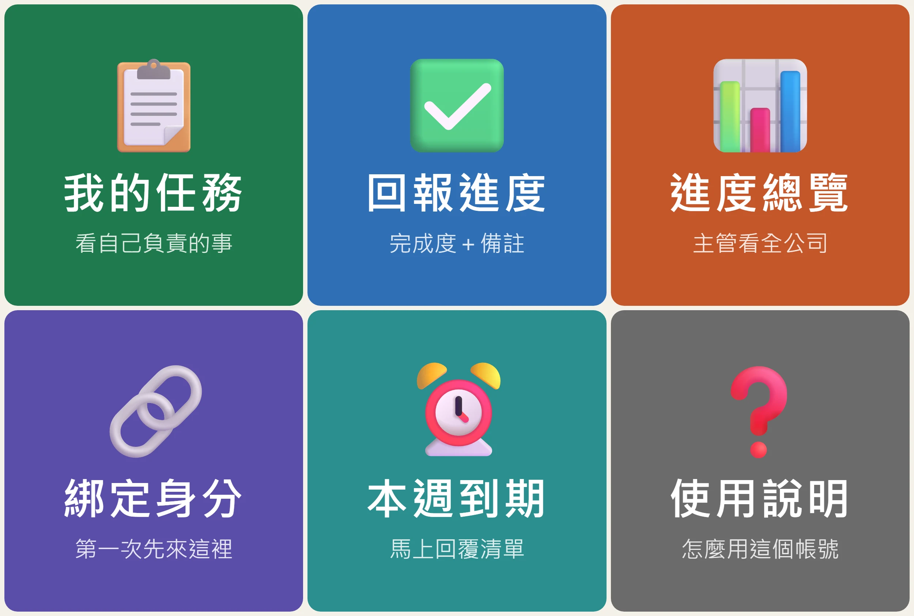
- A～D 打開 LINE 裡的畫面（LIFF）
- E「本週到期」、F「使用說明」由機器人直接回覆
- 這張圖是 AI 畫的：先排版成網頁，再用電腦內建的瀏覽器拍成圖片
- 每一格要做什麼，在官方帳號後台設定
11/18 實測產出的選單圖（青禾範例）。你的選單依自己的訪談結果會不同。
選單打開的四個畫面，各給誰用
訪談時可以增減；這是課程預設
| 畫面 | 給誰 | 做什麼 |
|---|---|---|
| 我的任務 | 每位負責人 | 看自己的任務、一鍵改成進行中或已完成 |
| 回報進度 | 每位負責人 | 選任務，填完成度（%）和一句備註 |
| 進度總覽 | 管理者 | 各目標完成率、各負責人進度、逾期清單 |
| 綁定身分 | 第一次使用的人 | 從名單點選自己是誰 |
還有：負責人的手機每天收到提醒

- 負責人點選單「綁定身分」，選自己的名字（此圖為原版，當時用傳訊息綁定）
- 每天固定時間，自動推播快到期與逾期的任務
- 沒綁定的人，會彙整通知管理者
- 改成「已完成」的任務就不再提醒
範例畫面：原版青禾食品範例包（已遮蔽個資）。新版由 AI 依你的規格書產生，欄位與文字會不同。
今天的 180 分鐘
破冰在開場前、休息另計（休息依現場安排在任務二之後或任務三進行中）
開場
看成果、知道哪些要本人做
任務〇 開工檢查
打開 Code 分頁；登入 Google、LINE、GitHub
任務一 AI 訪談
回答 AI 的問題，得到一份規格書
任務二 拍板
主管確認規格書
任務三 AI 一次做完
看 AI 工作、討論；被叫到才動手
任務四 手機驗收
AI 自我檢查＋手機六格逐一點
收束
開放給同事、AI 還能用在哪裡
今天只用一個工具：Claude 桌面版
Code 分頁
AI 能讀寫你資料夾裡的檔案、執行指令、記錄進度。訪談和執行都在這裡。
內建瀏覽器
Ctrl+Shift+B（Mac：Cmd+Shift+B）。AI 在這裡開試算表、Apps Script、LINE 後台。
全班同一套
不用 Chrome、不用網頁版 claude.ai。大家看到的畫面一樣，助教才幫得上忙。
AI 動手，但這幾件事一定是你本人做
交給 AI
- 訪談、整理、寫規格書
- 寫 Apps Script 與網頁程式、畫選單圖
- 填官方帳號、LINE Login、LIFF 表單
- 設定 Webhook、觸發、圖文選單；檢查成果
本人操作
- 登入、密碼、驗證碼
- 貼上程式（Ctrl+V）、Google 授權彈窗
- 建立帳號與 channel 按確定、同意條款
- 發 token 並貼上、上傳選單圖、手機綁定
AI 會用「⏸ 請你本人操作」叫你。做完回覆「好了」，它才繼續。
講義：每個任務的 prompt 一鍵複製
- 開啟 3 小時版講義：只有任務與要複製的 prompt
- 按「複製 prompt」，貼到 Code 分頁，把黃色【】換成你的內容
- 操作步驟、應看到的畫面、卡關處理，都看投影片
- 沒有自己的 OKR？講義任務一可下載青禾食品便利貼照片
開工檢查：Code 分頁＋內建瀏覽器
- 左上角 </> 切到 Code，按「＋ 新增」
- 選資料夾 AI實戰營、模型 Sonnet、權限「接受編輯」
- 地球圖示（Ctrl+Shift+B）開內建瀏覽器，登入 Google、LINE、LINE Developers、GitHub
任務〇｜照這 9 步做（1／2）
灰字是做完應看到的畫面；對不上就先停，看「卡關怎麼辦」。完整 prompt 在講義。
- 在檔案總管的「桌面」按「新增 → 資料夾」，命名「AI實戰營」，把你的 OKR 資料（照片、Excel、Word、筆記）放進去。沒有資料就放講義的青禾食品便利貼照片應看到：資料夾裡至少有 1 個檔案
- 打開 Claude 桌面版，點左上角的「</>」切到 Code，再按左側「＋ 新增」應看到：中間出現「描述任務或提出問題」輸入框，下方一排選單
- 輸入框下方：環境選「這台電腦」，按「選擇資料夾」→ 桌面 → AI實戰營 → 按「選擇資料夾」應看到：輸入框下方顯示「這台電腦」「AI實戰營」
- 點右下角的模型名稱，選「Sonnet」應看到：右下角顯示 Sonnet
- 點模型旁的權限模式，選「接受編輯」（自動接受所有檔案編輯）應看到：右下角顯示「接受編輯」；執行指令或操作新網站時，Claude 仍會先問你
任務〇｜照這 9 步做（2／2）
灰字是做完應看到的畫面；對不上就先停，看「卡關怎麼辦」。完整 prompt 在講義。
- 點標題列的地球圖示（或按 Ctrl+Shift+B，Mac：Cmd+Shift+B）打開內建瀏覽器；在瀏覽器右上「⋯」選單點「保留 Cookie」，改成比「直到結束應用程式」更長的選項（關掉 App 後不必重登）應看到：內建瀏覽器出現「瀏覽網頁」；同一個選單的「管理允許的網站」可先加入 Google、LINE 網址，之後少按幾次允許
- 本人在內建瀏覽器依序登入：sheets.google.com（Google）、manager.line.biz（LINE）、developers.line.biz/console（同一個 LINE 帳號）、github.com/login（GitHub）應看到：四個網站都看到自己的帳號（沒有官方帳號也沒關係）
- 把內建瀏覽器窗格往左拖寬（約占畫面一半），網頁才不會被擠壓應看到：Google 試算表不再顯示「視窗太小」
- 本人左下角頭像 → 設定 → 隱私：確認「Help improve our AI models」是關閉的應看到：開關為關閉；公司資料不拿去訓練模型
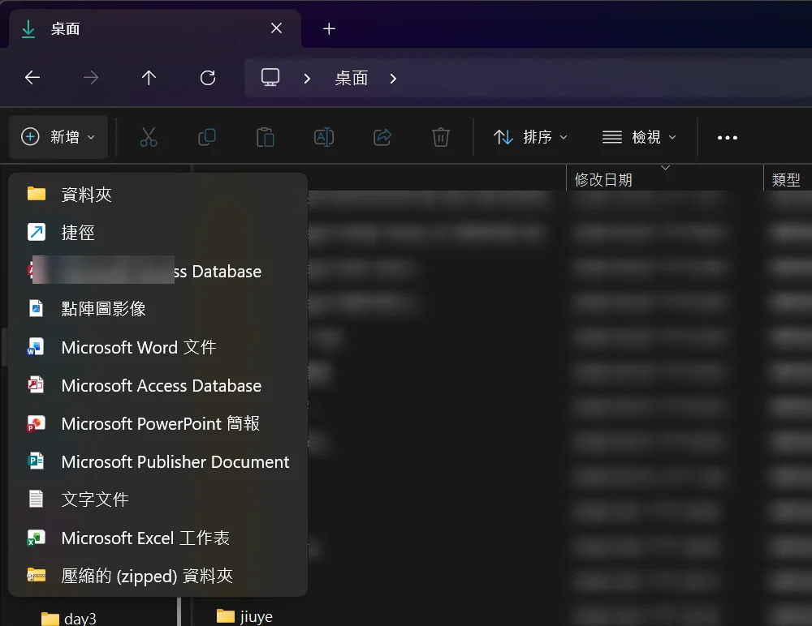
檔案總管 → 桌面 → ①「新增」→ ②「資料夾」
在檔案總管的「桌面」按「新增 → 資料夾」，命名「AI實戰營」，把你的 OKR 資料（照片、Excel、Word、筆記）放進去。沒有資料就放講義的青禾食品便利貼照片
應看到：資料夾裡至少有 1 個檔案
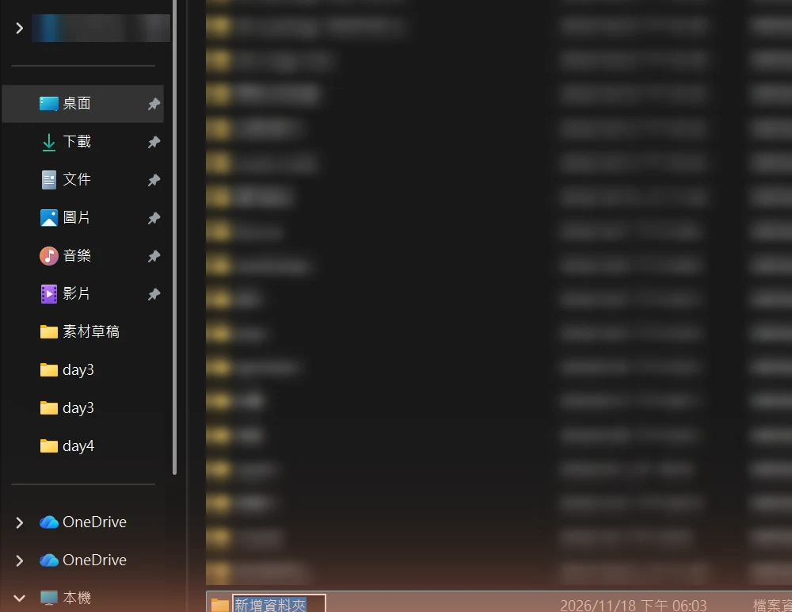
新資料夾出現在最下面：① 直接輸入名稱「AI實戰營」
在檔案總管的「桌面」按「新增 → 資料夾」，命名「AI實戰營」，把你的 OKR 資料（照片、Excel、Word、筆記）放進去。沒有資料就放講義的青禾食品便利貼照片
應看到：資料夾裡至少有 1 個檔案
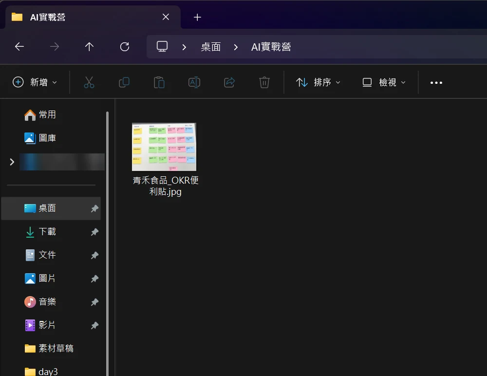
打開 ① 桌面 › AI實戰營，② 把 OKR 檔案放進來
在檔案總管的「桌面」按「新增 → 資料夾」，命名「AI實戰營」，把你的 OKR 資料（照片、Excel、Word、筆記）放進去。沒有資料就放講義的青禾食品便利貼照片
應看到：資料夾裡至少有 1 個檔案
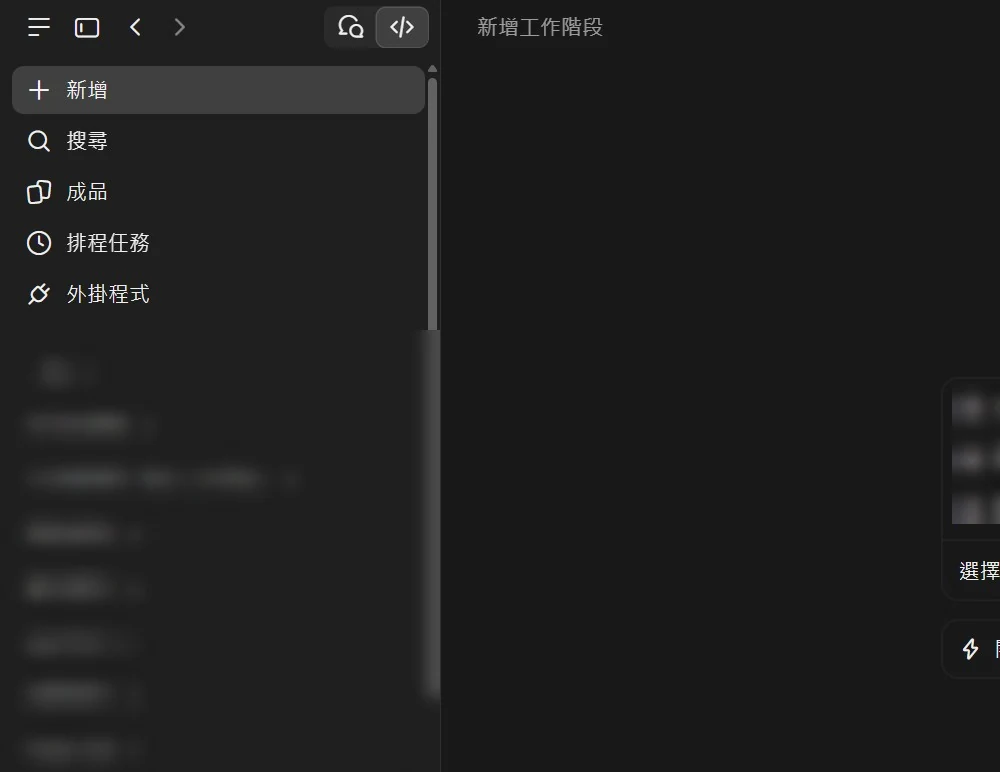
① 左上角「</>」切到 Code ② 按「＋ 新增」
打開 Claude 桌面版，點左上角的「</>」切到 Code，再按左側「＋ 新增」
應看到：中間出現「描述任務或提出問題」輸入框，下方一排選單
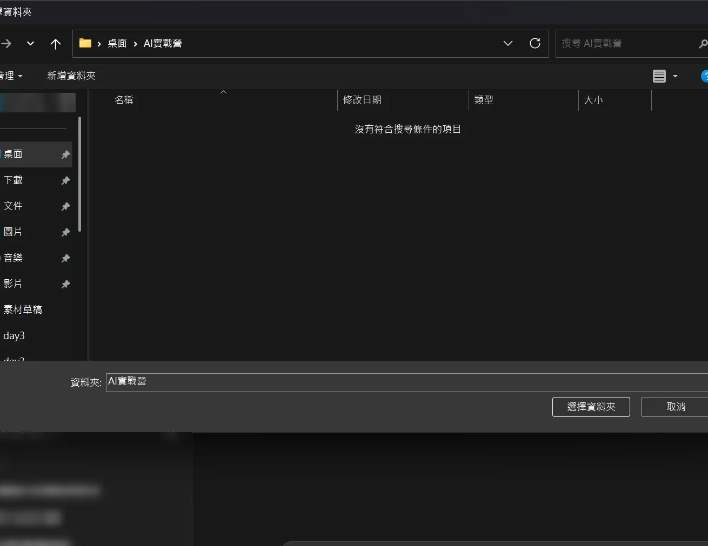
選擇資料夾視窗：① 桌面 › AI實戰營 ② 按「選擇資料夾」
輸入框下方：環境選「這台電腦」，按「選擇資料夾」→ 桌面 → AI實戰營 → 按「選擇資料夾」
應看到：輸入框下方顯示「這台電腦」「AI實戰營」
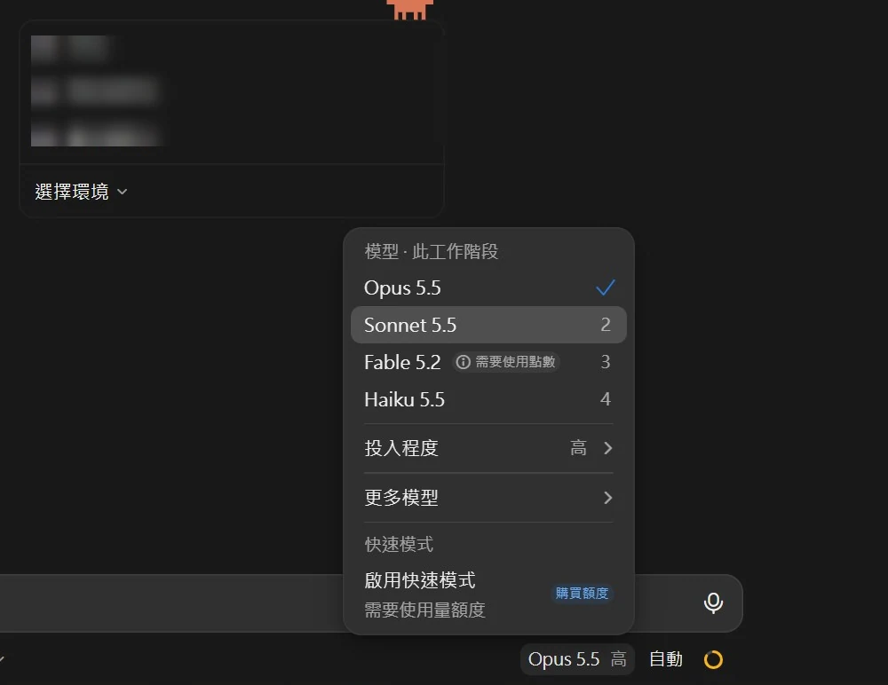
① 點右下角模型名稱 ② 選「Sonnet」
點右下角的模型名稱，選「Sonnet」
應看到：右下角顯示 Sonnet
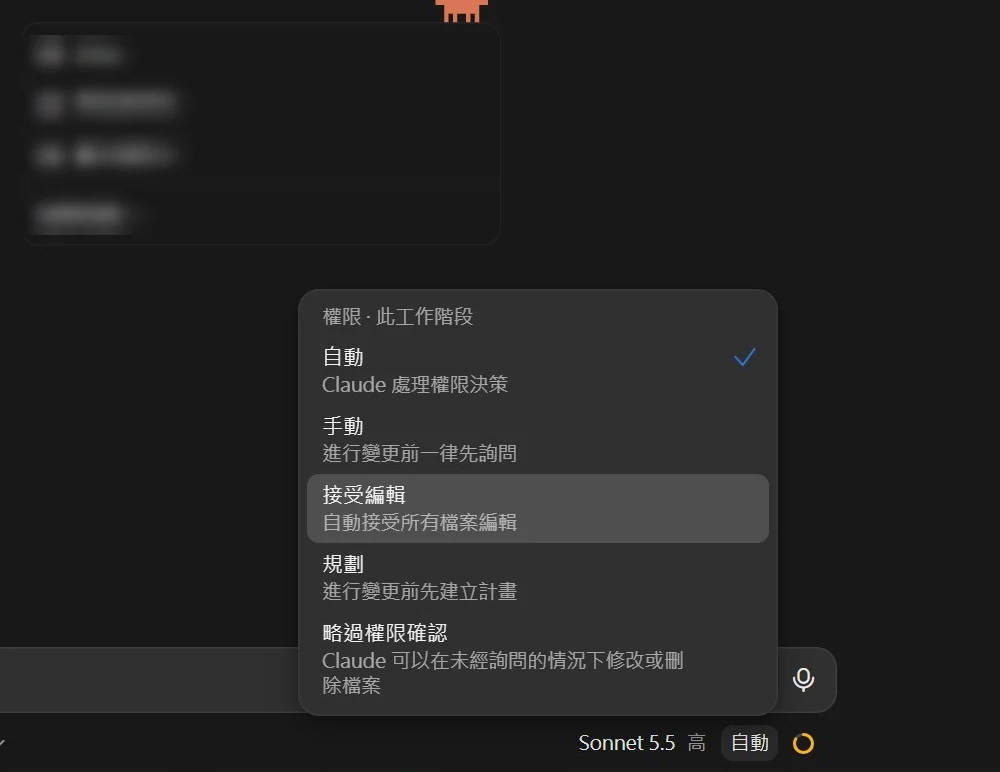
① 點權限模式 ② 選「接受編輯」
點模型旁的權限模式，選「接受編輯」（自動接受所有檔案編輯）
應看到：右下角顯示「接受編輯」；執行指令或操作新網站時，Claude 仍會先問你
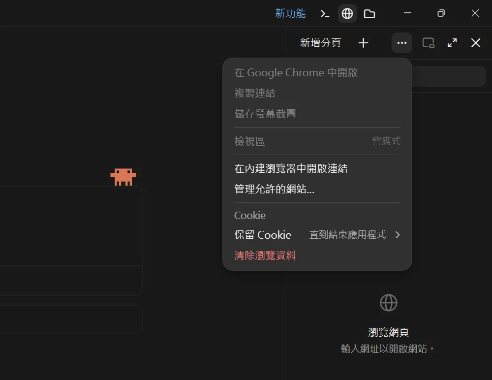
① 地球圖示開內建瀏覽器 ② 右上「⋯」 ③「保留 Cookie」
點標題列的地球圖示（或按 Ctrl+Shift+B，Mac：Cmd+Shift+B）打開內建瀏覽器；在瀏覽器右上「⋯」選單點「保留 Cookie」，改成比「直到結束應用程式」更長的選項（關掉 App 後不必重登）
應看到：內建瀏覽器出現「瀏覽網頁」；同一個選單的「管理允許的網站」可先加入 Google、LINE 網址，之後少按幾次允許
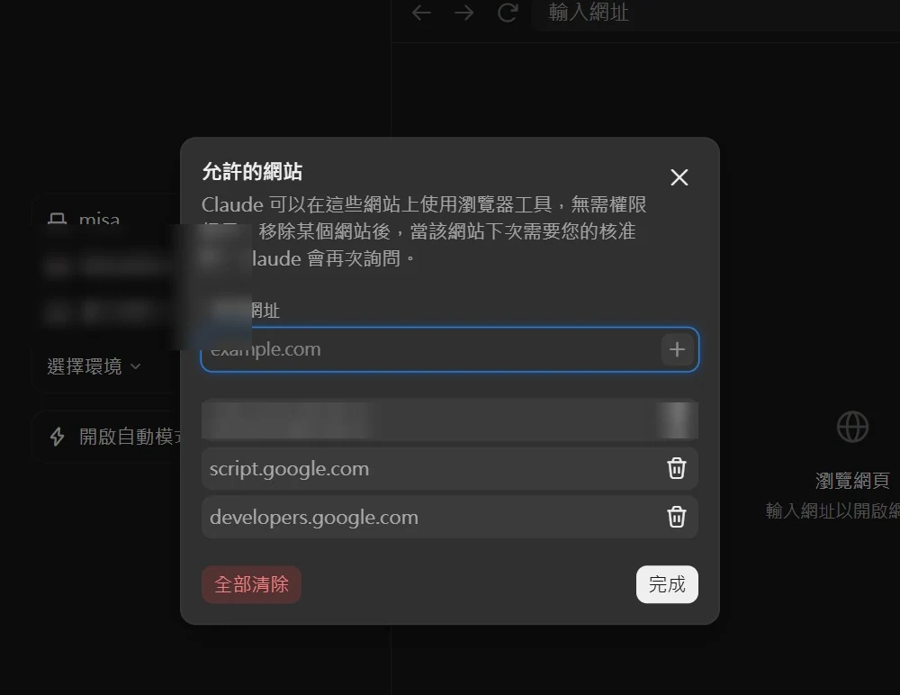
（選做）同一個選單的「管理允許的網站」：① 先加入 Google、LINE 網址
點標題列的地球圖示（或按 Ctrl+Shift+B，Mac：Cmd+Shift+B）打開內建瀏覽器；在瀏覽器右上「⋯」選單點「保留 Cookie」，改成比「直到結束應用程式」更長的選項（關掉 App 後不必重登）
應看到：內建瀏覽器出現「瀏覽網頁」；同一個選單的「管理允許的網站」可先加入 Google、LINE 網址，之後少按幾次允許
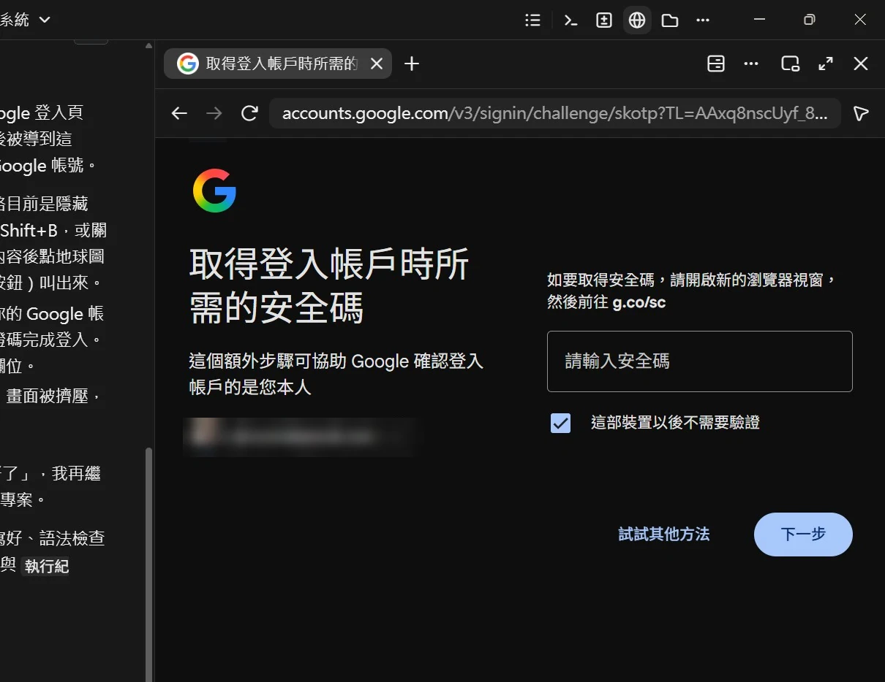
在內建瀏覽器登入 Google：帳號、密碼、驗證都由本人輸入
本人在內建瀏覽器依序登入：sheets.google.com（Google）、manager.line.biz（LINE）、developers.line.biz/console（同一個 LINE 帳號）、github.com/login（GitHub）
應看到：四個網站都看到自己的帳號（沒有官方帳號也沒關係）
任務〇｜卡關怎麼辦？（1／2）
先對照症狀；卡住 3 分鐘請助教判斷，不要重複貼同一段 prompt。
| 看到這個狀況 | 這樣處理 |
|---|---|
| 找不到 Code 分頁 | 先更新 Claude 桌面版到最新版；確認登入的是 Pro 以上帳號。仍沒有就請助教協助，今天改看講師示範。 |
| Ctrl+Shift+B 沒反應 | 改按工作階段標題列上的「Browser」按鈕；必須先開一個工作階段才有內建瀏覽器。 |
| Google 登入顯示「此瀏覽器或應用程式可能不安全」 | 請助教協助；先繼續做訪談（訪談不需要瀏覽器），執行階段前再處理。 |
| 模型選單沒有 Sonnet | 選清單中最新的 Sonnet 版本；不要選 Opus，Pro 額度會很快用完。 |
任務〇｜卡關怎麼辦？（2／2）
先對照症狀；卡住 3 分鐘請助教判斷，不要重複貼同一段 prompt。
| 看到這個狀況 | 這樣處理 |
|---|---|
| 權限選單沒有 Accept edits | 舊版名稱是「Auto accept edits」，選它即可。 |
| 沒有 GitHub 帳號 | 課前清單有寫：到 github.com/signup 本人註冊（Email 驗證碼要本人輸入）。來不及就先做訪談，助教在任務三的 GitHub 步驟前補好。 |
為什麼一開始就先登入？
AI 不能幫你登入
密碼和驗證碼一定是本人輸入。先登入好，AI 執行時就不會卡住等你。
Keep cookies
內建瀏覽器預設是乾淨的設定檔；開啟 Keep cookies，關掉 App 也不用重登。
用 Sonnet
Pro 方案有用量上限。Sonnet 夠聰明也比較省；Opus 很快就會用完額度。
讓 AI 訪談你
AI 不缺答案，缺的是你腦中的脈絡
為什麼要讓 AI 來訪談？
OKR 常常只寫一半
有目標、沒驗收；有任務、沒負責人；有負責人、沒期限。
AI 一題一題追問
像顧問一樣把缺的問出來，你只要回答或點選。
得到可執行的規格
每個目標怎麼驗收、每件事誰做、何時完成，寫成一份規格書。
五花八門的資料都可以丟進來
這是青禾食品的便利貼牆：沒有資料的學員可以用它練習
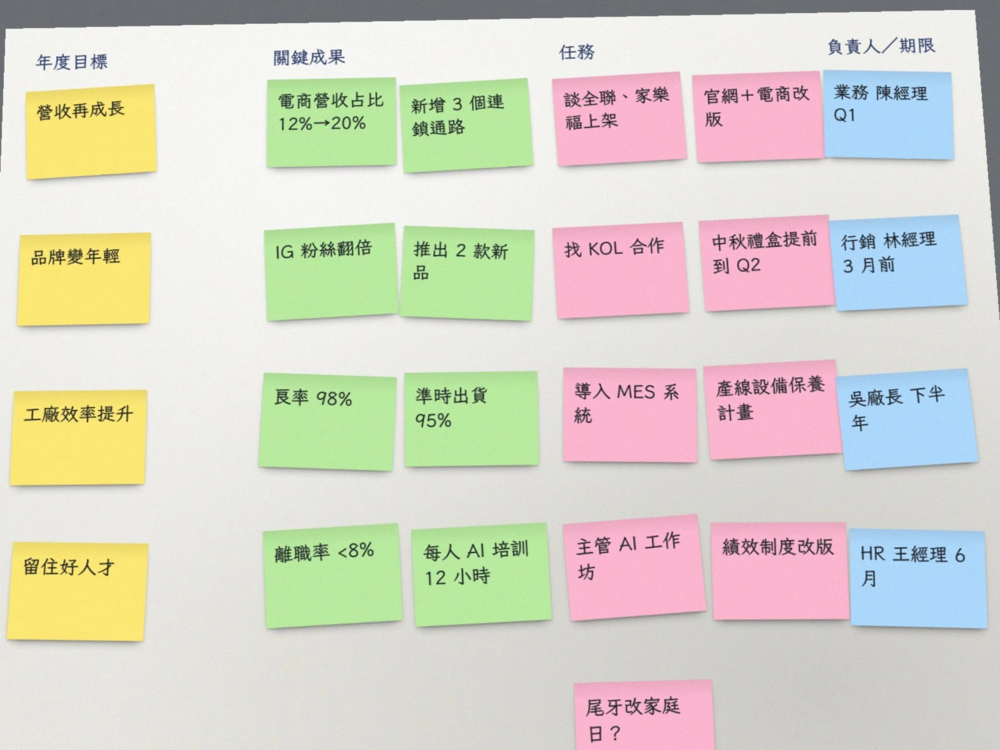
- 手機拍的便利貼、白板、筆記本
- Excel、Word、PDF
- 什麼都沒有：直接打字或口述
- 敏感內容先拿掉或改代號
範例畫面：原版青禾食品範例包（已遮蔽個資）。新版由 AI 依你的規格書產生，欄位與文字會不同。
AI 訪談：把 OKR 問成一份規格書
- 貼上訪談 prompt，附上你的 OKR 資料
- 一題一題回答：計畫 → 提醒 → LINE 畫面與選單
- 收到規格書：任務清單＋選單 6 格
訪談 prompt 在要求 AI 做什麼？
示意：依任務一訪談 prompt 的規則重現，不是實際對話紀錄
還缺：每個目標怎麼驗收、任務的負責人與期限。①
A 電商營收占比達 20%（建議）B 營收成長 15%C 你決定②
提前 7 天、早上 9 點（建議）你決定
Q14／15 LINE 選單維持預設六格嗎？
確認或修改後，貼上任務三的執行 prompt 才會開始建置。④
黃色標籤對應 prompt 規則：① 先讀資料、說看懂什麼 ② 一次一題、給選項（「你決定」記為 AI 假設） ③ 依序問目標 → 提醒 → LINE ④ 最多 15 題，寫出規格書就停
任務一｜照這 5 步做
灰字是做完應看到的畫面；對不上就先停，看「卡關怎麼辦」。完整 prompt 在講義。
- 在 Code 分頁輸入框貼上訪談 prompt；把【】連同括號一起換成你的資料說明從講義複製 prompt應看到：prompt 出現在輸入框
- 在【】的位置打 @，從清單選資料夾裡的 OKR 檔案（或把檔案拖進輸入框）；按 Enter 送出應看到：送出的訊息裡有檔案標籤；Claude 先讀檔，再說它看懂了什麼、缺什麼
- 一題一題回答：點選選項後按「提交」；不確定就選標「建議」的那一個應看到：每次只問一題，標「需要您的輸入」
- 本人遇到敏感資料的提醒時，決定要拿掉還是改成代號應看到：規格書裡不出現薪資、客戶個資等內容
- 等 Claude 寫完規格書（約 15 題內結束），點連結打開應看到：「已建立 年度計畫規格書.md」，對話中有任務清單與選單 6 格表格；右側可預覽規格書
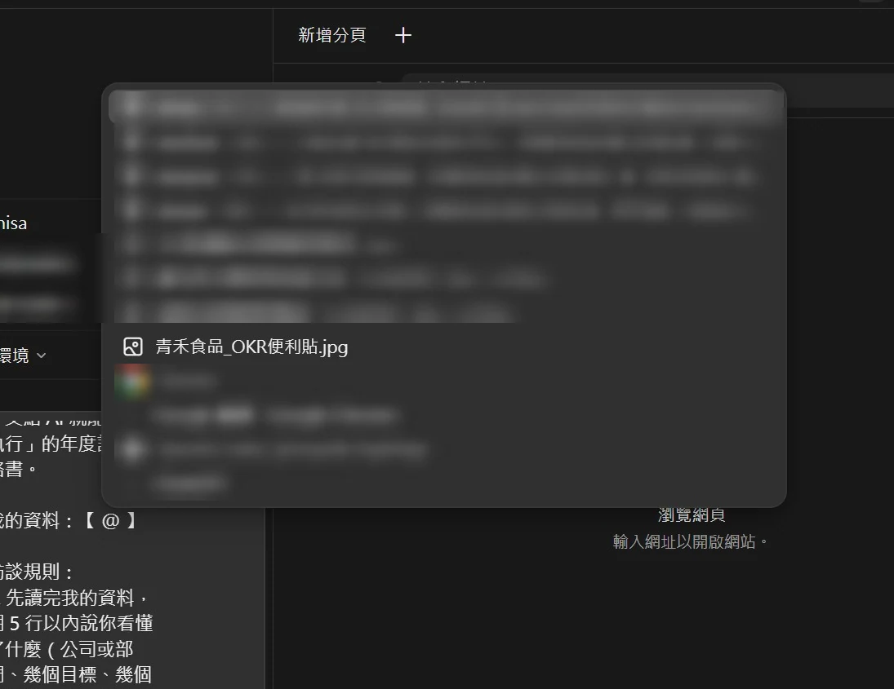
在【】的位置打 @：① 選 OKR 檔案（其他項目已遮蔽）
在【】的位置打 @，從清單選資料夾裡的 OKR 檔案（或把檔案拖進輸入框）；按 Enter 送出
應看到：送出的訊息裡有檔案標籤；Claude 先讀檔，再說它看懂了什麼、缺什麼
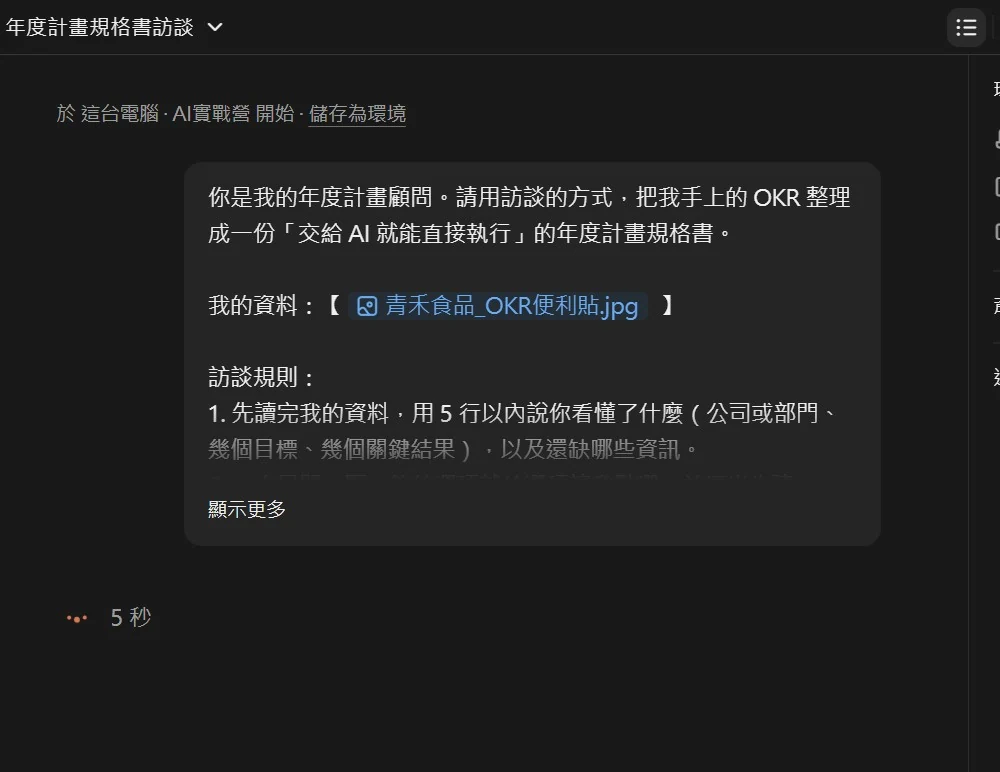
送出後：① 訊息裡有檔案標籤，Claude 開始讀檔
在【】的位置打 @，從清單選資料夾裡的 OKR 檔案（或把檔案拖進輸入框）；按 Enter 送出
應看到：送出的訊息裡有檔案標籤；Claude 先讀檔，再說它看懂了什麼、缺什麼
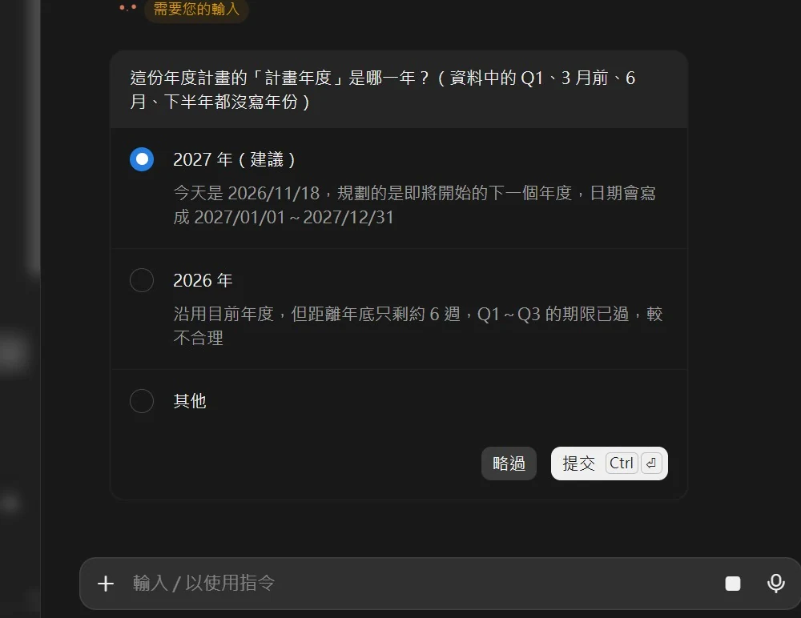
① 點選一個選項（標「建議」的最省事） ② 按「提交」
一題一題回答：點選選項後按「提交」；不確定就選標「建議」的那一個
應看到：每次只問一題，標「需要您的輸入」
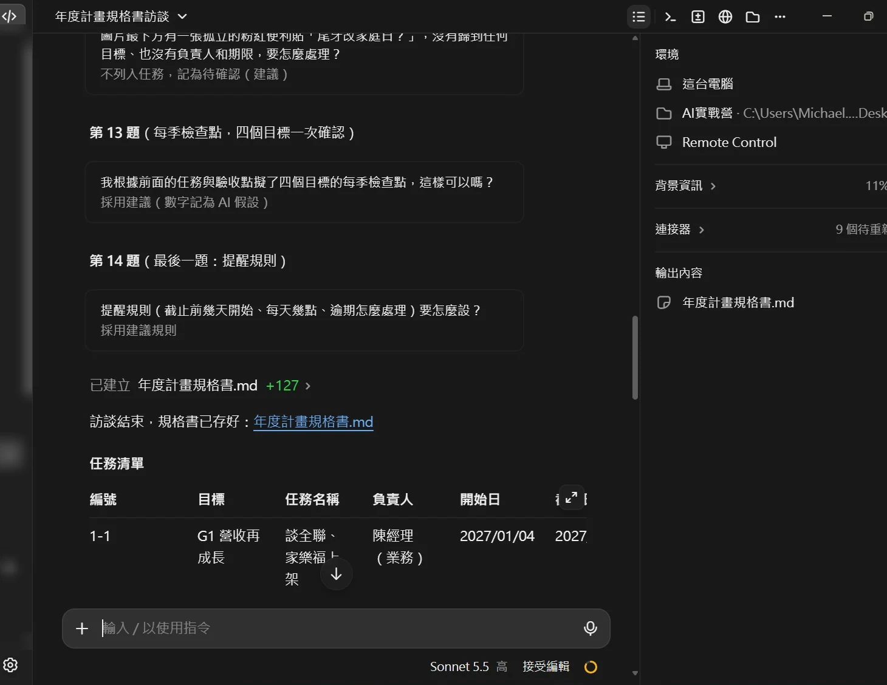
① 規格書已建立，點連結打開 ② 右側「輸出內容」也看得到
等 Claude 寫完規格書（約 15 題內結束），點連結打開
應看到：「已建立 年度計畫規格書.md」，對話中有任務清單與選單 6 格表格；右側可預覽規格書
任務一｜卡關怎麼辦？（1／2）
先對照症狀；卡住 3 分鐘請助教判斷，不要重複貼同一段 prompt。
| 看到這個狀況 | 這樣處理 |
|---|---|
| AI 一直問、停不下來 | 回覆：「剩下的你決定，標記為 AI 假設，現在產出規格書。」 |
| 照片讀不清楚 | 重拍（正面、光線充足），或把看不清的部分直接打字補充。 |
| AI 開始建試算表或開瀏覽器 | 按停止，回覆：「先停，只要規格書，等我確認。」 |
| 資料是口述、沒有檔案 | 直接在【】裡打字描述目標，例如「明年營收成長 20%、新開 3 家門市」，AI 會用問答補齊。 |
任務一｜卡關怎麼辦？（2／2）
先對照症狀；卡住 3 分鐘請助教判斷，不要重複貼同一段 prompt。
| 看到這個狀況 | 這樣處理 |
|---|---|
| 負責人名字寫法不一致 | 回覆：「負責人一律用『姓名＋職稱』，同一人寫法統一。」後面 LINE 綁定靠這個名字。 |
一份好的規格書長這樣
| 節 | 內容 | 為什麼重要 |
|---|---|---|
| 1 計畫摘要 | 公司或部門、年度、負責主管 | 試算表與官方帳號名稱 |
| 2 目標與驗收 | 關鍵結果、驗收方式、確認人、期限 | 年底能不能說「達成了」 |
| 3 任務清單 | 負責人、開始日、截止日、交付成果 | 提醒和「我的任務」都讀這張表 |
| 4 人員名單 | 姓名、職稱、部門 | 綁定身分靠名字對上 |
| 5 提醒規則 | 提前幾天、每天幾點、逾期怎麼辦 | 每日提醒的程式邏輯 |
| 6 LINE 畫面與權限 | 四個畫面、誰能看、誰能改、管理者 | 權限寫在後端 |
| 7 圖文選單 | A～F 名稱、顏色、動作、回覆文字 | 選單圖與每格設定 |
| 8 AI 假設 | AI 替你決定的地方 | 下一步要由你拍板 |
拍板規格書：主管做決定
- 打開規格書，看三件事
- 用修改 prompt 改到滿意
- 可選：請 AI 扮演挑剔的董事長
任務二｜照這 4 步做
灰字是做完應看到的畫面；對不上就先停，看「卡關怎麼辦」。完整 prompt 在講義。
- 點對話中的「年度計畫規格書.md」連結打開檔案（或到資料夾用記事本開啟）應看到：看到 6 節內容與任務清單表
- 本人看三件事：每個目標量得出來嗎？每項任務有負責人與截止日嗎？AI 假設可以接受嗎？應看到：心裡有一份要改的清單
- 要改的地方用修改 prompt 告訴 Claude從講義複製 prompt應看到：Claude 回報改了哪幾列
- 可選：貼第二段，請 AI 扮演挑剔的董事長找漏洞從講義複製第二段應看到：3 個最可能失敗的地方與改法
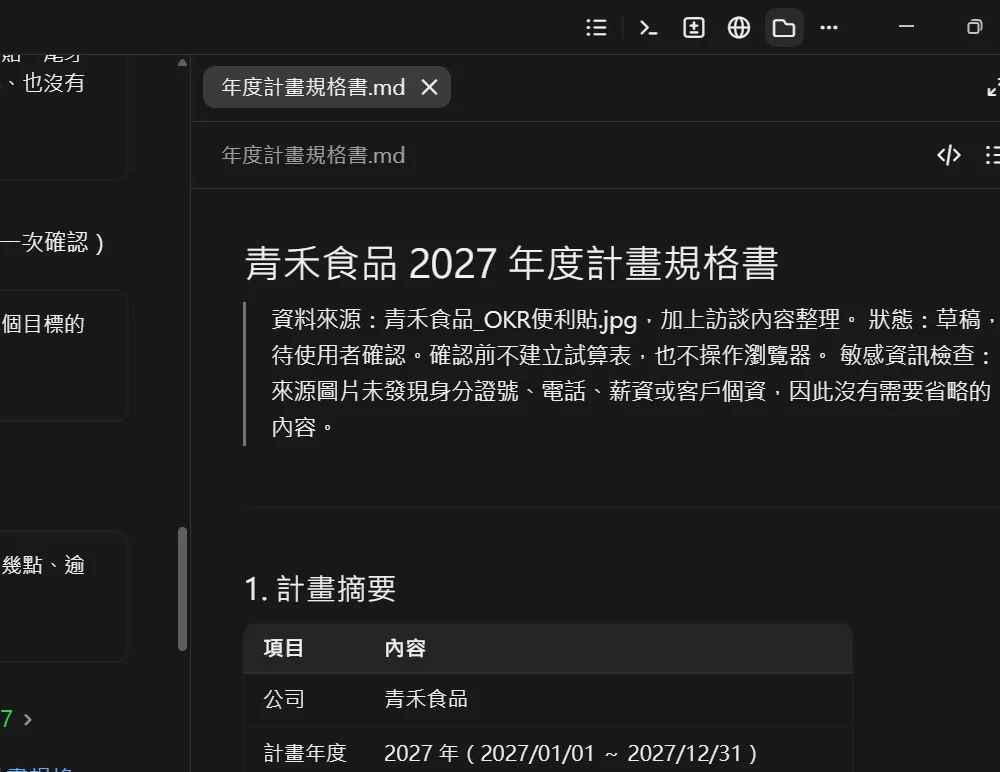
① 規格書在右側打開 ② 逐節看：目標、驗收、負責人、期限
點對話中的「年度計畫規格書.md」連結打開檔案（或到資料夾用記事本開啟）
應看到：看到 6 節內容與任務清單表
任務二｜卡關怎麼辦？
先對照症狀；卡住 3 分鐘請助教判斷，不要重複貼同一段 prompt。
| 看到這個狀況 | 這樣處理 |
|---|---|
| 打不開 .md 檔 | 請 Claude：「把規格書的任務清單用表格貼在對話裡。」 |
| 想大改目標 | 回覆：「目標二重新訪談，最多問 5 題。」不必從頭來。 |
| 日期不是 yyyy/mm/dd | 回覆：「所有日期改成 yyyy/mm/dd。」後面試算表要靠它做日期格式。 |
拍板時，主管只看三件事
量得出來嗎？
每個目標的驗收方式，年底能用數字或文件判斷。
有人有期限嗎？
每項任務都有一個負責人、一個截止日。
AI 假設可以嗎？
AI 替你決定的地方，接受、修改或刪除。
休息 10 分鐘
點一下數字開始倒數
把規格書交給 AI，一次做完
你看它工作、我們討論；它叫你，你才動手
AI 接下來會依序做這些事
試算表
你貼程式官方帳號
你發 token部署＋提醒
GitHub repo
LIFF
網頁上線
你貼網頁圖文選單
你上傳手機測試
你加好友AI 一次做完：試算表、提醒、LINE 畫面、圖文選單
- 貼上執行 prompt，換掉三個【】
- 看到「⏸ 請你本人操作」才動手，做完回覆「好了」
- 手機加好友、點選單「綁定身分」，收到測試提醒
執行 prompt 的五個部分
① 成果
試算表、每日提醒、LINE 裡的四個畫面、六格選單
② 做法
程式寫成檔案、用剪貼簿貼上；ID 放指令碼屬性；網頁放 GitHub Pages
③ 停下來的點
登入、條款、授權、token、貼程式、上傳圖片、加好友：叫你本人做
④ 禁止事項
不碰 token、不刪東西、不亂發 LINE、卡兩次就停
⑤ 回報
完成後用表格回報 8 項結果與未完成事項
這就是好的交辦
對部屬交辦工作，也是同樣五件事
任務三｜哪些要你本人做？
先備好
任務二確認過的規格書；內建瀏覽器已登入 Google、LINE、LINE Developers、GitHub，窗格已拉寬；手機在旁邊。
本人操作
約 12 次，每次幾秒到一分鐘：網站核准、貼程式（Apps Script、GitHub 各一次）、Google 授權彈窗、建立官方帳號與 LINE Login channel 時按確定與同意條款、發 token 並貼上、上傳選單圖片、手機加好友與綁定、同意測試提醒。AI 會用「⏸ 請你本人操作」叫你。
做完要看到：Claude 的完成回報每項都有結果；手機聊天室下方出現六格選單、收到測試提醒。
任務三｜照這 13 步做（1／3）
灰字是做完應看到的畫面；對不上就先停，看「卡關怎麼辦」。完整 prompt 在講義。
- 在任務一同一個對話貼上「整段」執行 prompt（不要只丟規格書檔案或只回數字），把三個【】連同括號換掉，按 Enter從講義複製 prompt應看到：Claude 列出工作清單；它要執行指令時會問「是否允許 Claude 執行此指令？」，按「允許一次」
- 本人Claude 第一次操作某個網站時會問「允許 Claude 在…上執行操作？」：Google、LINE、GitHub 相關網站選「永遠允許」應看到：內建瀏覽器開始自己動：script.new 開出新的 Apps Script 專案
- 本人Claude 叫你貼程式時：點一下 Apps Script 編輯器，按 Ctrl+A、Ctrl+V、Ctrl+S（Mac 用 Cmd），回覆「好了」應看到：編輯器出現完整程式，中文正常、標題列顯示已儲存
- 本人Claude 執行 setupSheet 後出現「需要授權」：按「審查權限」，在彈出視窗選帳號 →「進階」→「前往（不安全）」→「允許」，回覆「好了」應看到：執行記錄出現試算表網址；試算表有目標、任務、每人分頁、通訊錄、使用說明
- 本人Claude 填好建立官方帳號的表單後：核對帳號名稱與業種，按「確定」→「完成」；進管理頁跳出「同意我們使用您的資訊」也按「同意」，回覆「好了」應看到：「您的LINE官方帳號已建立完成」，有基本 ID（@ 開頭）
任務三｜照這 13 步做（2／3）
灰字是做完應看到的畫面；對不上就先停，看「卡關怎麼辦」。完整 prompt 在講義。
- 本人Claude 按「啟用 Messaging API」並填好服務提供者後：按「同意」（API 服務條款），下一個視窗的網址可留空按「確定」，回覆「好了」應看到：Messaging API 狀態為「使用中」
- 本人Claude 叫你處理 token 時：LINE Developers → Messaging API 分頁最下方 Channel access token 按「Issue」→ 複製；回到 Apps Script「專案設定 → 指令碼屬性」，在 LINE_TOKEN 那一列貼上值、儲存，回覆「好了」應看到：指令碼屬性有 SHEET_ID 與 LINE_TOKEN；對話裡從頭到尾沒有出現 token
- 等 Claude 部署網頁應用程式（誰可以存取：所有人）、設定 Webhook、關閉自動回應訊息、建立每日觸發應看到：Verify 可能顯示 302，這是正常的；觸發條件有一個 dailyReminder
- 本人Claude 建立 GitHub repo 並填好 LINE Login channel 表單後：確認「Require two-factor authentication」已關閉（Email 是系統預填的，確認即可），勾選同意條款、按 Create，回覆「好了」應看到：新 channel 的頁面；Claude 接著新增 LIFF app，記下 LIFF ID
- 本人Claude 叫你貼網頁時：GitHub 新檔案 index.html 的編輯區 → Ctrl+A → Ctrl+V，回覆「好了」應看到：Claude 按 Commit、開啟 Pages，約 1 分鐘後網址可開
任務三｜照這 13 步做（3／3）
灰字是做完應看到的畫面；對不上就先停，看「卡關怎麼辦」。完整 prompt 在講義。
- 本人Claude 畫好選單圖、在官方帳號後台建立圖文選單；叫你上傳圖片時：按「上傳圖片並套用」，在檔案視窗選 Claude 給的路徑，回覆「好了」應看到：預覽出現六格圖，Claude 設定 A～F 動作與使用期間並儲存
- 本人手機掃 QR Code 加好友 → 聊天室下方點「綁定身分」→ 選你的名字（要選有負責任務的人）→ 確認綁定；Claude 問要不要執行 testReminder 時回覆「同意」應看到：「已綁定：你的名字」；手機收到【測試提醒】
- 看 Claude 的完成回報表格與手機測試清單應看到：試算表、官方帳號、GitHub Pages、LIFF URL、提醒時間、選單期間、綁定人數、測試結果
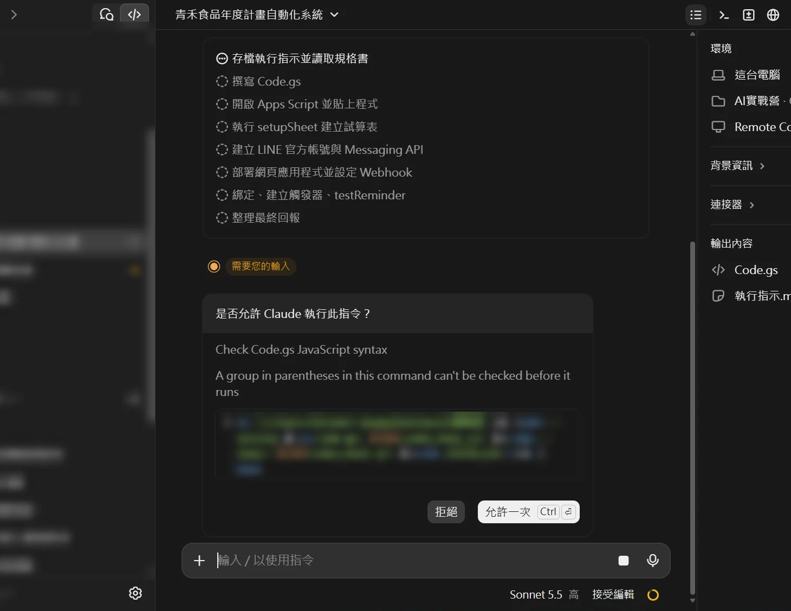
① Claude 列出工作清單 ② 要執行指令時按「允許一次」
在任務一同一個對話貼上「整段」執行 prompt（不要只丟規格書檔案或只回數字），把三個【】連同括號換掉，按 Enter從講義複製 prompt
應看到：Claude 列出工作清單；它要執行指令時會問「是否允許 Claude 執行此指令？」，按「允許一次」
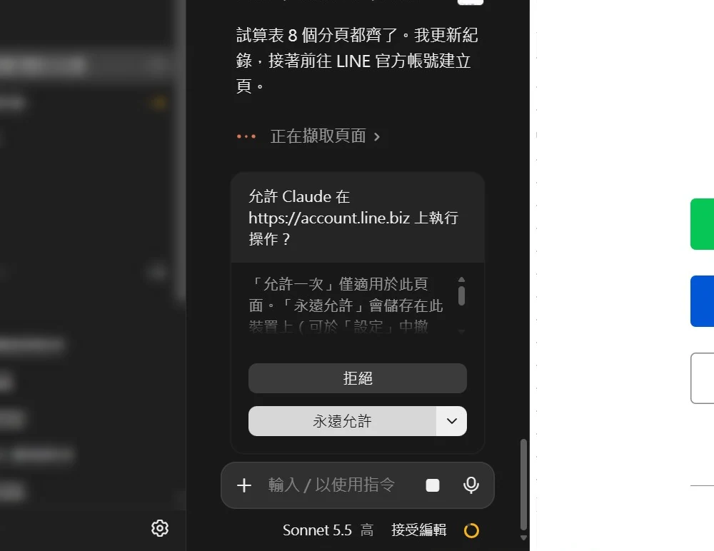
Claude 第一次操作新網站：① 選「永遠允許」
本人Claude 第一次操作某個網站時會問「允許 Claude 在…上執行操作？」：Google、LINE、GitHub 相關網站選「永遠允許」
應看到：內建瀏覽器開始自己動：script.new 開出新的 Apps Script 專案
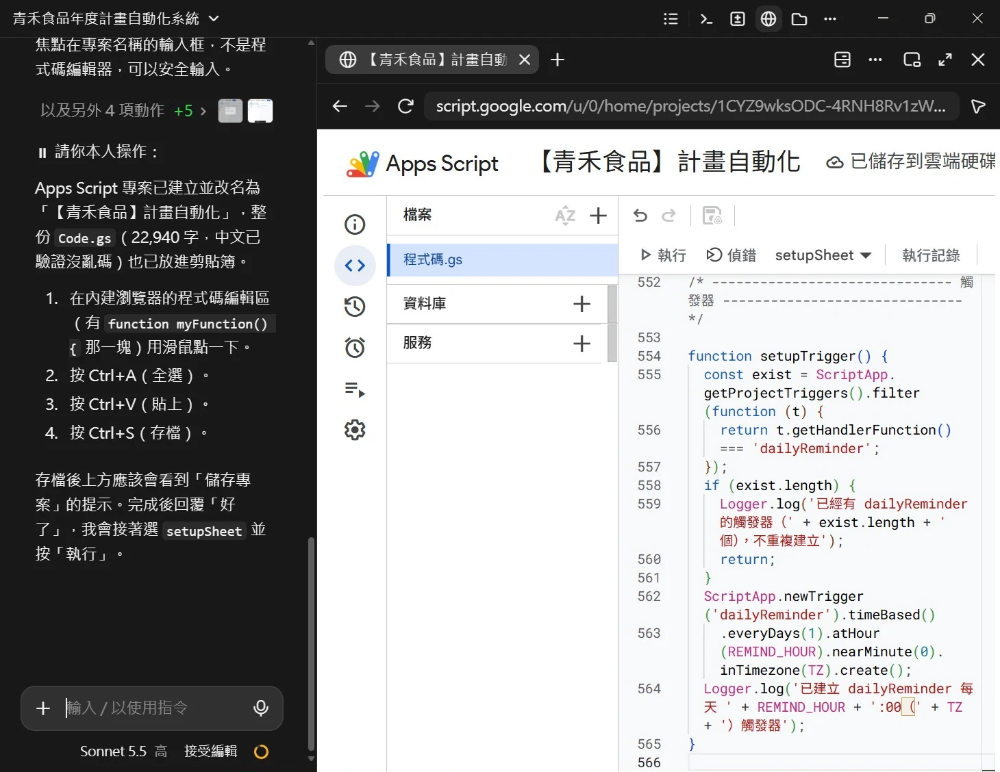
① 照「⏸ 請你本人操作」做 ② 程式貼進編輯器並儲存
本人Claude 叫你貼程式時：點一下 Apps Script 編輯器，按 Ctrl+A、Ctrl+V、Ctrl+S（Mac 用 Cmd），回覆「好了」
應看到：編輯器出現完整程式，中文正常、標題列顯示已儲存
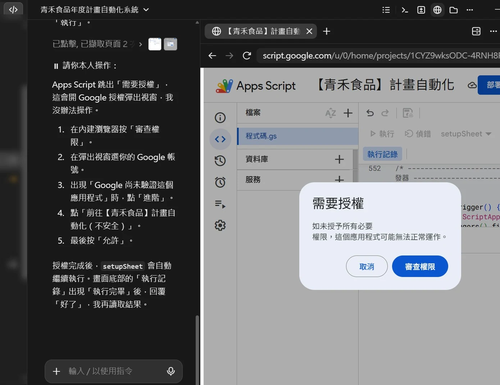
① 出現「需要授權」按「審查權限」 ② 照 Claude 列的 5 步完成授權
本人Claude 執行 setupSheet 後出現「需要授權」：按「審查權限」，在彈出視窗選帳號 →「進階」→「前往（不安全）」→「允許」，回覆「好了」
應看到：執行記錄出現試算表網址；試算表有目標、任務、每人分頁、通訊錄、使用說明
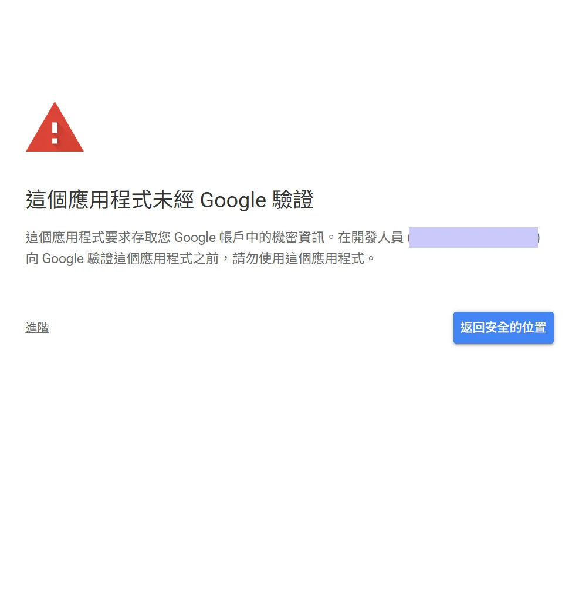
授權彈窗：先按「進階」
本人Claude 執行 setupSheet 後出現「需要授權」：按「審查權限」，在彈出視窗選帳號 →「進階」→「前往（不安全）」→「允許」，回覆「好了」
應看到：執行記錄出現試算表網址；試算表有目標、任務、每人分頁、通訊錄、使用說明
此畫面沿用 2026-10-18 實測截圖

再按「前往（不安全）」：這是你自己的程式
本人Claude 執行 setupSheet 後出現「需要授權」：按「審查權限」，在彈出視窗選帳號 →「進階」→「前往（不安全）」→「允許」，回覆「好了」
應看到：執行記錄出現試算表網址；試算表有目標、任務、每人分頁、通訊錄、使用說明
此畫面沿用 2026-10-18 實測截圖
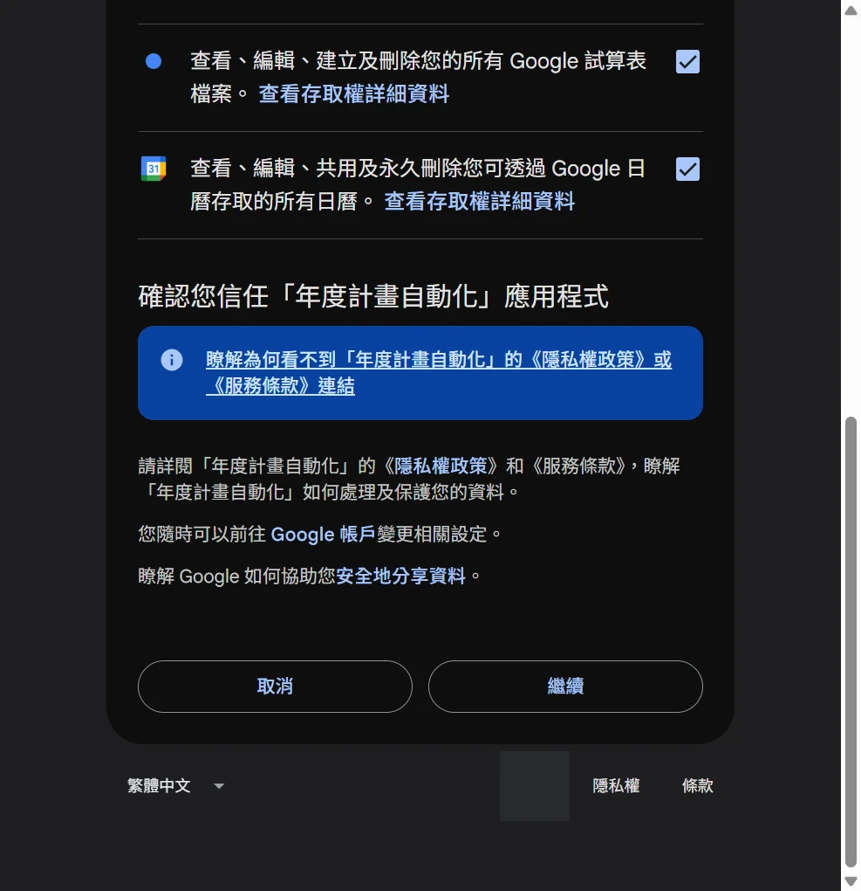
看清楚權限後，勾選並按「繼續」
本人Claude 執行 setupSheet 後出現「需要授權」：按「審查權限」，在彈出視窗選帳號 →「進階」→「前往（不安全）」→「允許」，回覆「好了」
應看到：執行記錄出現試算表網址；試算表有目標、任務、每人分頁、通訊錄、使用說明
此畫面沿用 2026-10-18 實測截圖
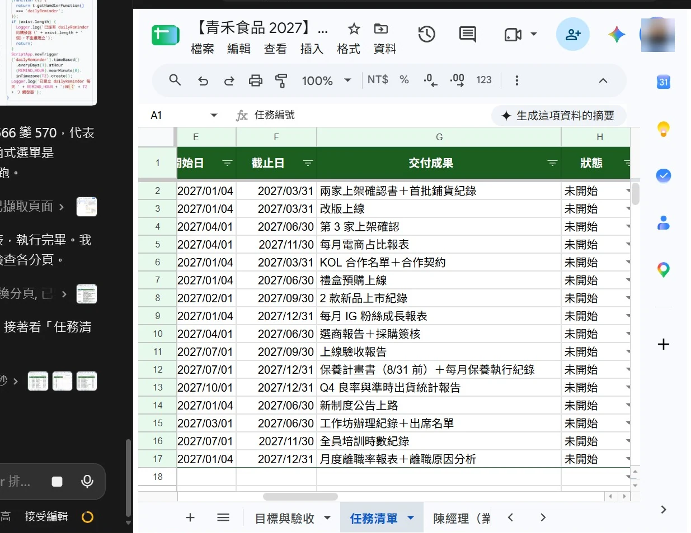
授權後 setupSheet 自動建好試算表：① 欄位 ② 分頁
本人Claude 執行 setupSheet 後出現「需要授權」：按「審查權限」，在彈出視窗選帳號 →「進階」→「前往（不安全）」→「允許」，回覆「好了」
應看到：執行記錄出現試算表網址；試算表有目標、任務、每人分頁、通訊錄、使用說明
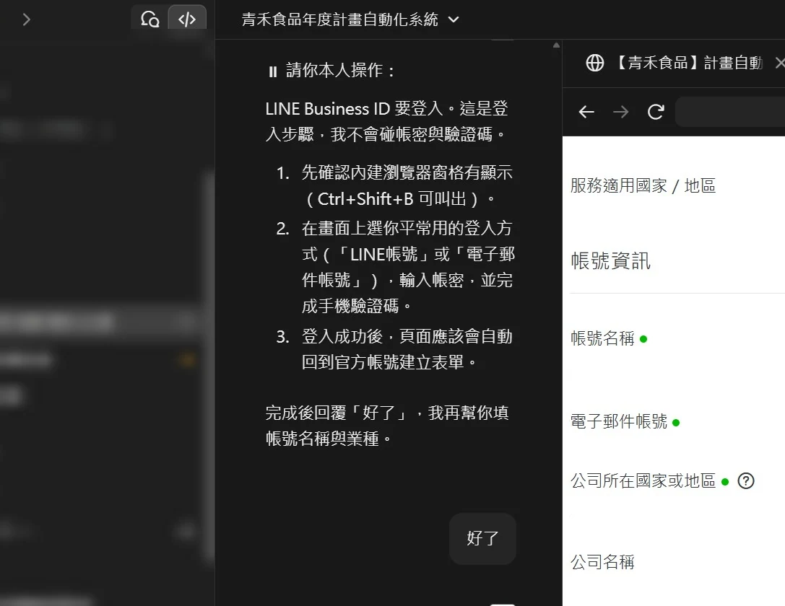
① LINE 登入由本人操作；Claude 接著填好建立表單
本人Claude 填好建立官方帳號的表單後：核對帳號名稱與業種，按「確定」→「完成」；進管理頁跳出「同意我們使用您的資訊」也按「同意」，回覆「好了」
應看到：「您的LINE官方帳號已建立完成」，有基本 ID（@ 開頭）
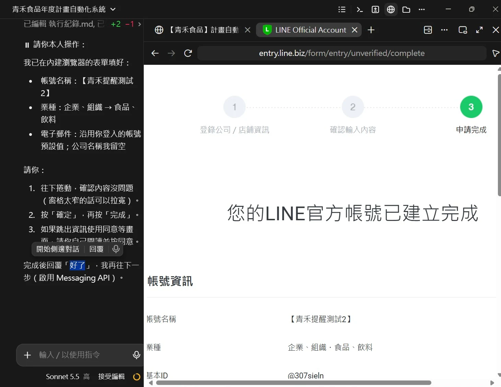
① 本人按「確定」「完成」 ② 看到「您的LINE官方帳號已建立完成」
本人Claude 填好建立官方帳號的表單後：核對帳號名稱與業種，按「確定」→「完成」；進管理頁跳出「同意我們使用您的資訊」也按「同意」，回覆「好了」
應看到：「您的LINE官方帳號已建立完成」，有基本 ID（@ 開頭）
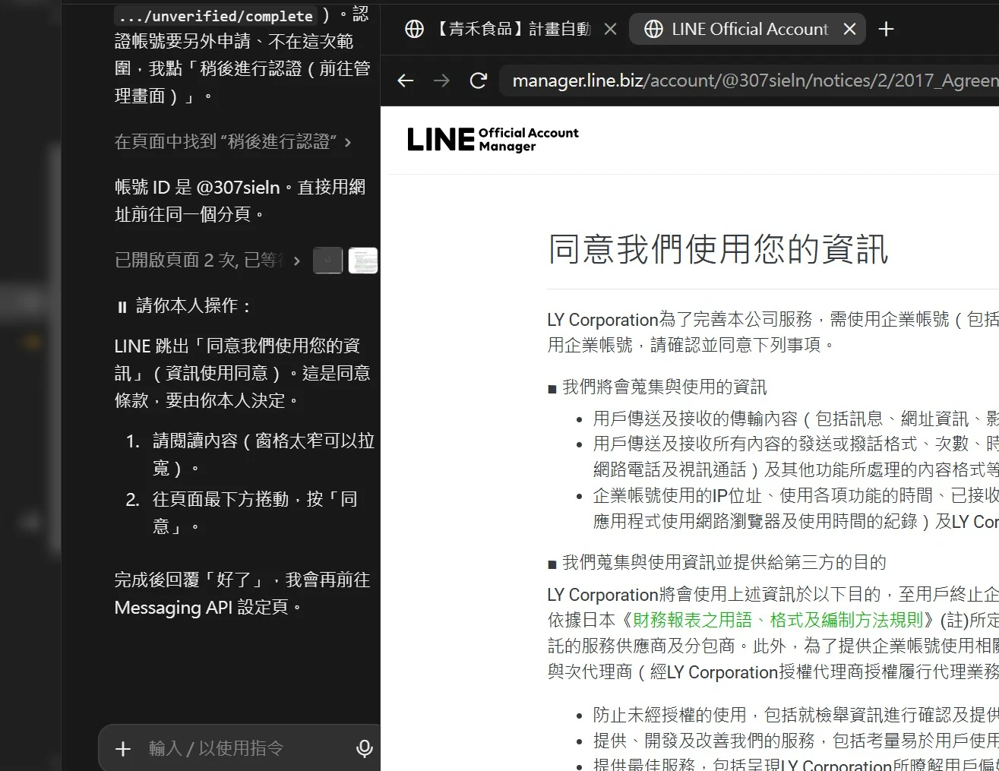
① 進管理頁先跳出資訊使用同意 ② 本人閱讀後按「同意」
本人Claude 填好建立官方帳號的表單後：核對帳號名稱與業種，按「確定」→「完成」；進管理頁跳出「同意我們使用您的資訊」也按「同意」，回覆「好了」
應看到：「您的LINE官方帳號已建立完成」，有基本 ID（@ 開頭）
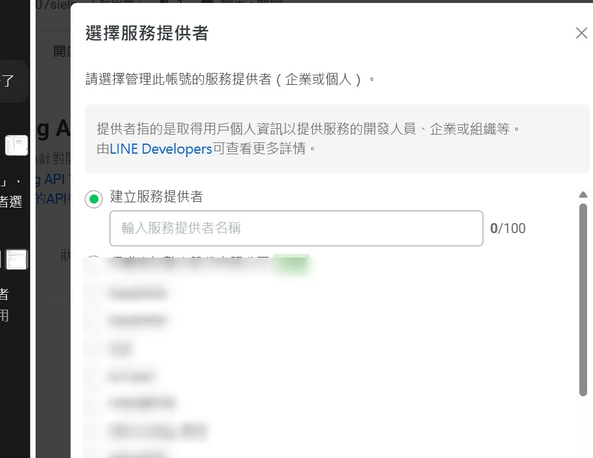
啟用 Messaging API：① 建立服務提供者（填公司名），本人按「同意」
本人Claude 按「啟用 Messaging API」並填好服務提供者後：按「同意」（API 服務條款），下一個視窗的網址可留空按「確定」，回覆「好了」
應看到：Messaging API 狀態為「使用中」
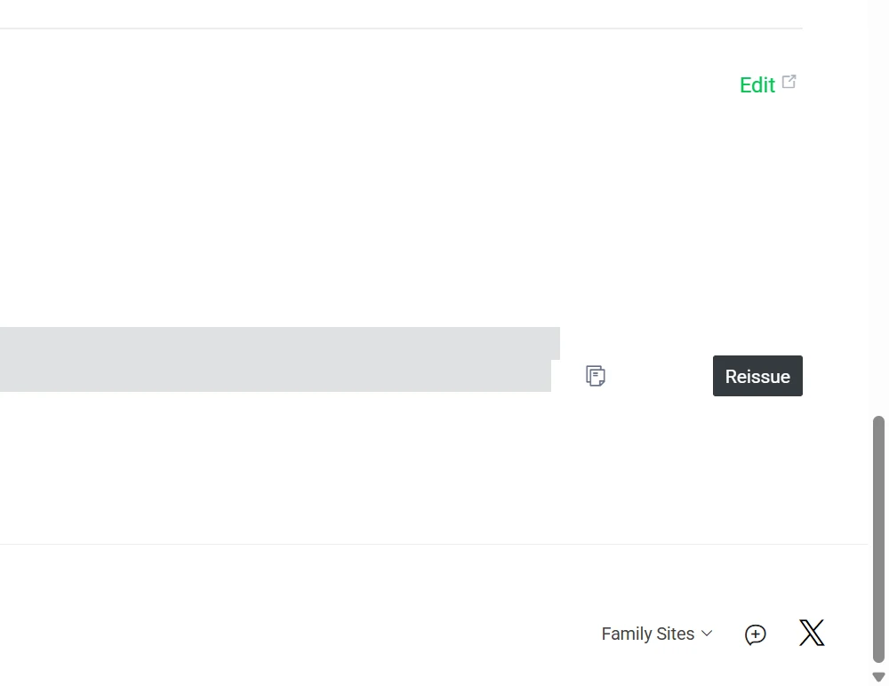
LINE Developers → Messaging API 分頁：① 本人按「Issue」並複製
本人Claude 叫你處理 token 時：LINE Developers → Messaging API 分頁最下方 Channel access token 按「Issue」→ 複製；回到 Apps Script「專案設定 → 指令碼屬性」，在 LINE_TOKEN 那一列貼上值、儲存，回覆「好了」
應看到：指令碼屬性有 SHEET_ID 與 LINE_TOKEN；對話裡從頭到尾沒有出現 token
此畫面沿用 2026-10-18 實測截圖
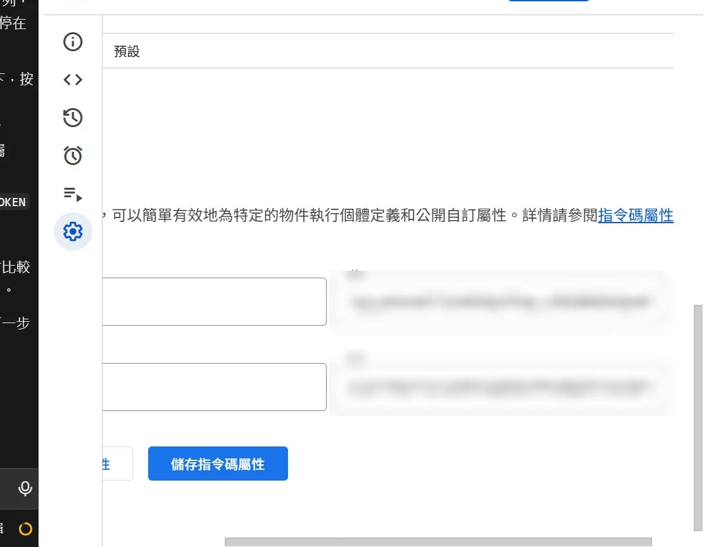
① 在 LINE_TOKEN 的「值」貼上 ② 按「儲存指令碼屬性」
本人Claude 叫你處理 token 時：LINE Developers → Messaging API 分頁最下方 Channel access token 按「Issue」→ 複製；回到 Apps Script「專案設定 → 指令碼屬性」，在 LINE_TOKEN 那一列貼上值、儲存，回覆「好了」
應看到：指令碼屬性有 SHEET_ID 與 LINE_TOKEN；對話裡從頭到尾沒有出現 token
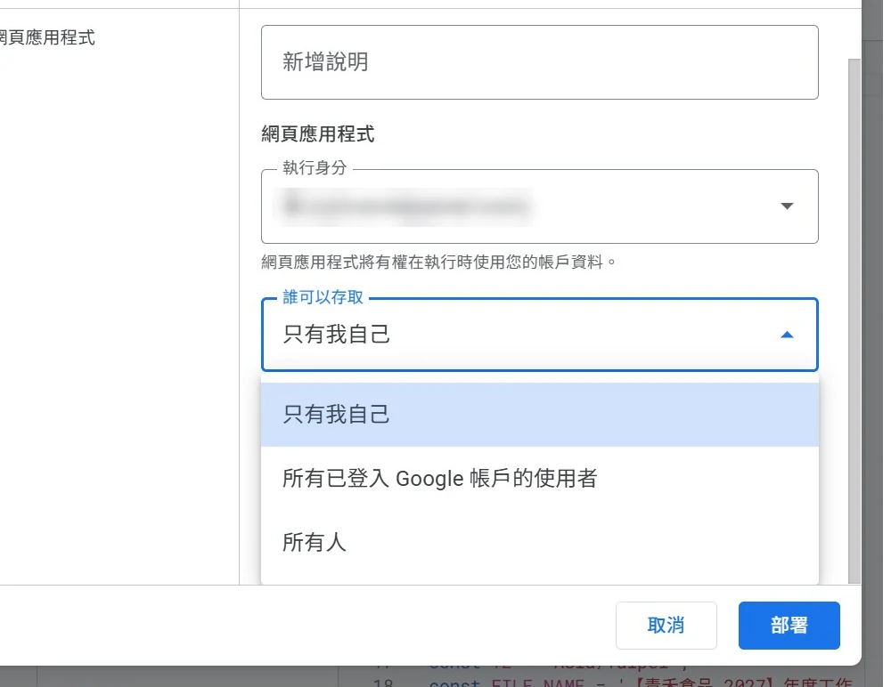
Claude 部署網頁應用程式：① 誰可以存取選「所有人」
等 Claude 部署網頁應用程式（誰可以存取：所有人）、設定 Webhook、關閉自動回應訊息、建立每日觸發
應看到：Verify 可能顯示 302，這是正常的；觸發條件有一個 dailyReminder
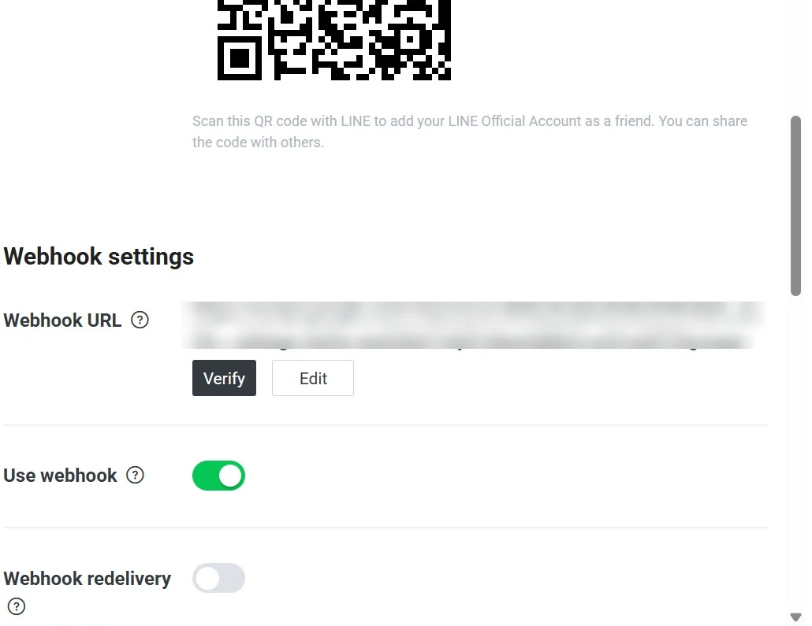
① Webhook URL 已填入（網址已遮蔽） ② Use webhook 開啟
等 Claude 部署網頁應用程式（誰可以存取：所有人）、設定 Webhook、關閉自動回應訊息、建立每日觸發
應看到：Verify 可能顯示 302，這是正常的；觸發條件有一個 dailyReminder
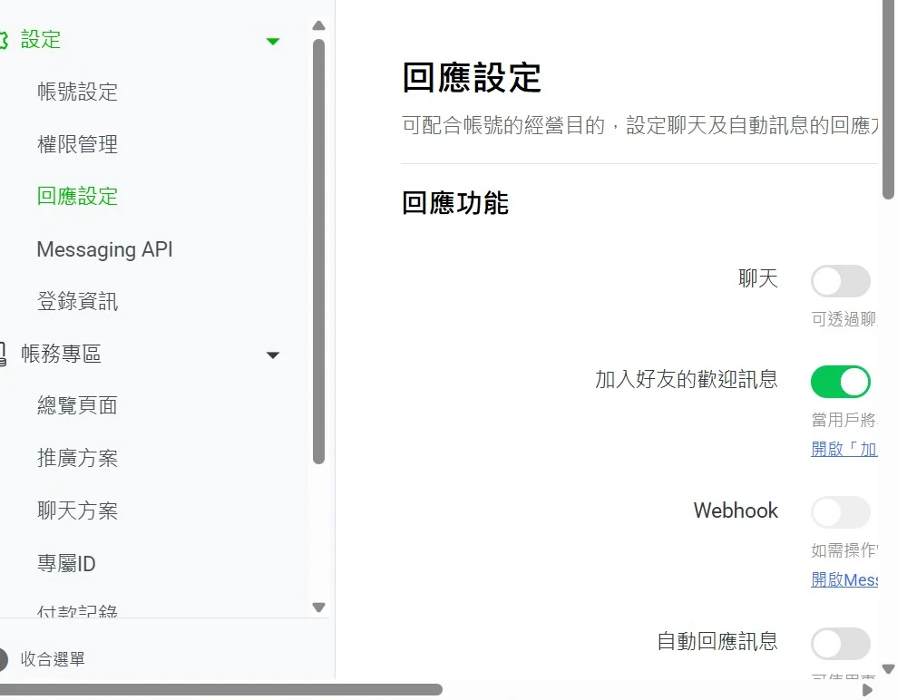
回應設定：① 自動回應訊息關閉
等 Claude 部署網頁應用程式（誰可以存取：所有人）、設定 Webhook、關閉自動回應訊息、建立每日觸發
應看到：Verify 可能顯示 302，這是正常的；觸發條件有一個 dailyReminder
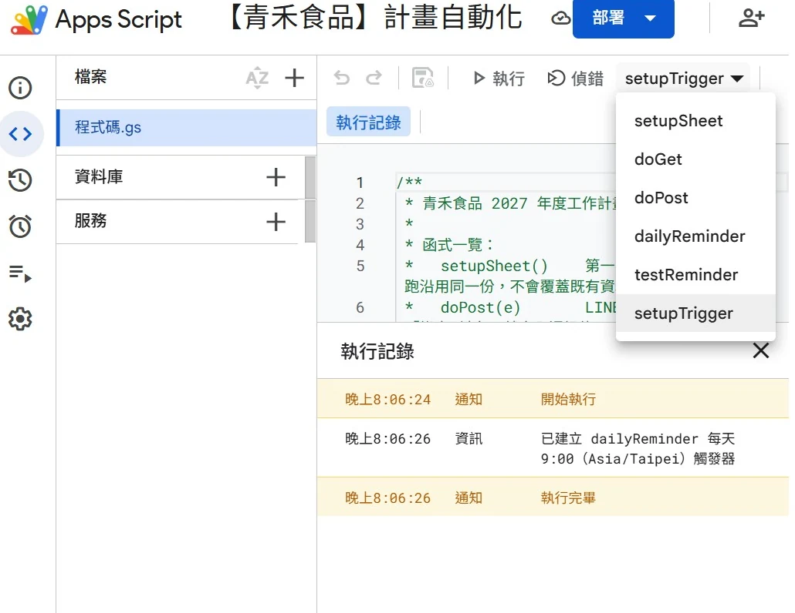
選函式時先展開選單：① setupTrigger ② 執行記錄確認觸發已建立
等 Claude 部署網頁應用程式（誰可以存取：所有人）、設定 Webhook、關閉自動回應訊息、建立每日觸發
應看到：Verify 可能顯示 302，這是正常的；觸發條件有一個 dailyReminder
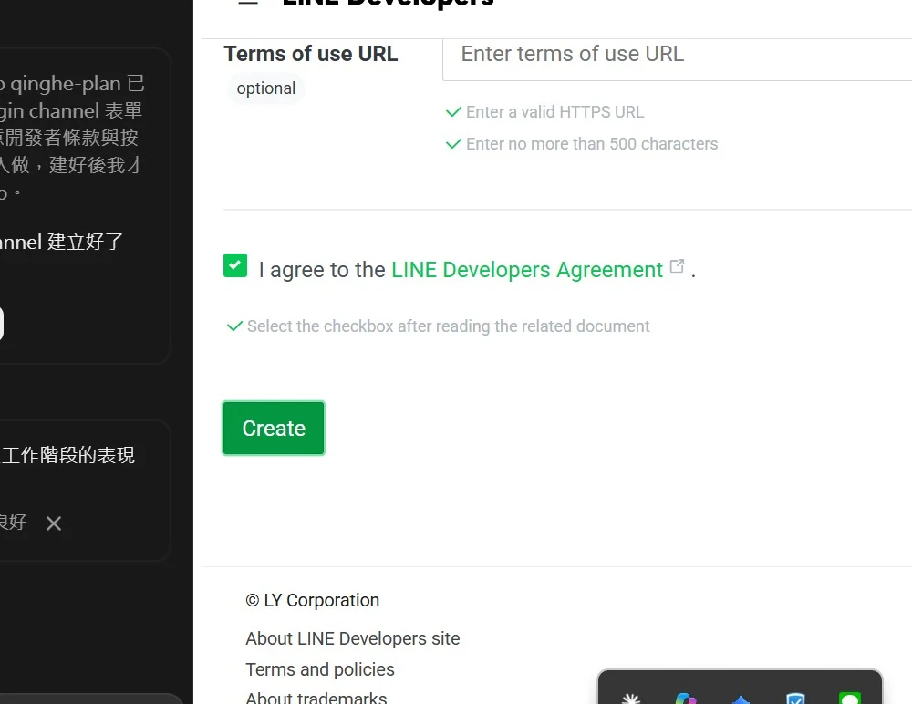
① 本人勾選同意條款 ② 按「Create」（表單由 Claude 填好；Email 是系統預填的）
本人Claude 建立 GitHub repo 並填好 LINE Login channel 表單後：確認「Require two-factor authentication」已關閉（Email 是系統預填的，確認即可），勾選同意條款、按 Create，回覆「好了」
應看到：新 channel 的頁面；Claude 接著新增 LIFF app，記下 LIFF ID
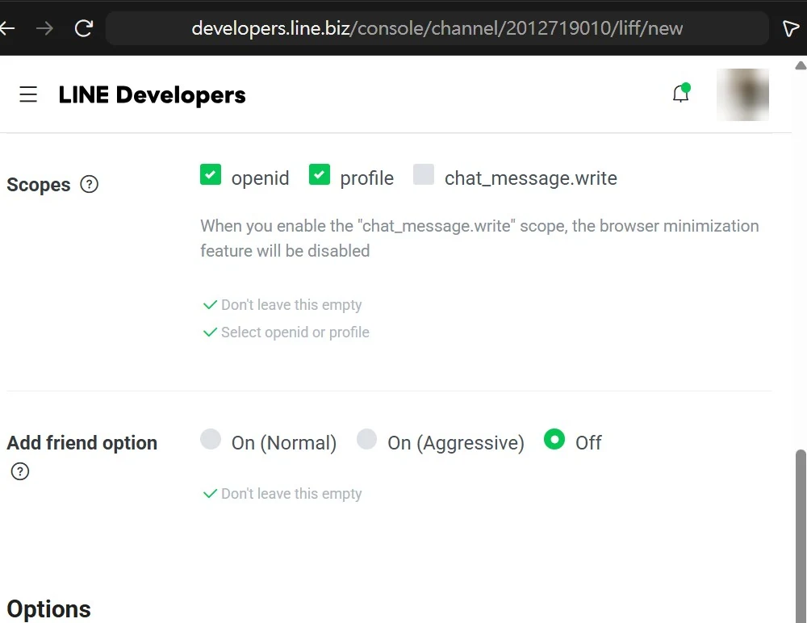
Claude 新增 LIFF app：① Scopes 勾 openid 與 profile ② Add friend option 選 Off（新增後要回頭核對 Scopes）
本人Claude 建立 GitHub repo 並填好 LINE Login channel 表單後：確認「Require two-factor authentication」已關閉（Email 是系統預填的，確認即可），勾選同意條款、按 Create，回覆「好了」
應看到：新 channel 的頁面；Claude 接著新增 LIFF app，記下 LIFF ID
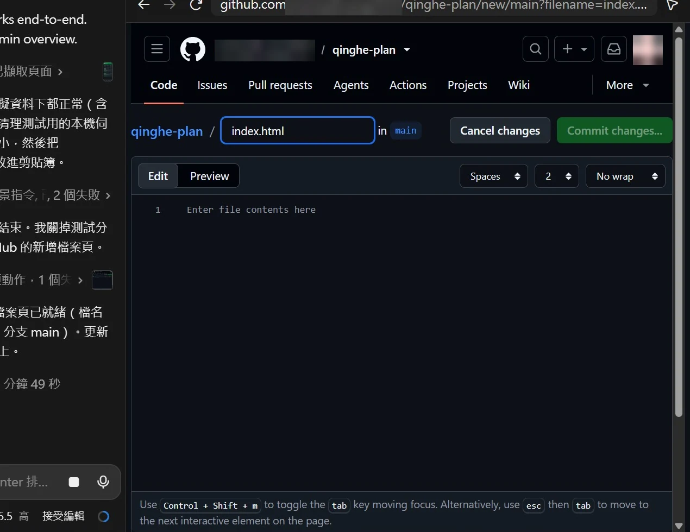
Claude 開好 GitHub 新檔案 index.html：① 點編輯區 → Ctrl+A → Ctrl+V
本人Claude 叫你貼網頁時：GitHub 新檔案 index.html 的編輯區 → Ctrl+A → Ctrl+V，回覆「好了」
應看到：Claude 按 Commit、開啟 Pages，約 1 分鐘後網址可開
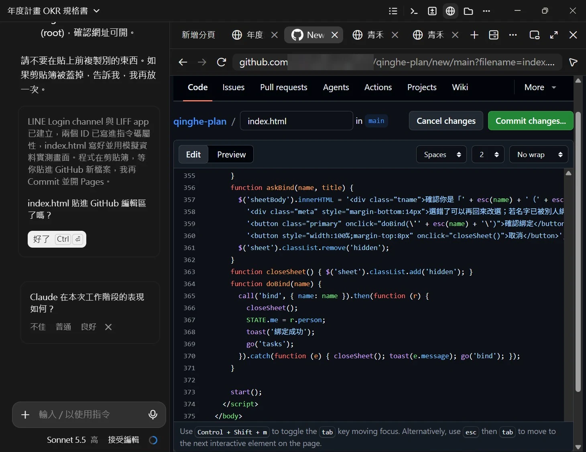
① 貼好後回覆「好了」 ② 編輯區出現完整網頁程式；Claude 接著按 Commit、開 Pages
本人Claude 叫你貼網頁時：GitHub 新檔案 index.html 的編輯區 → Ctrl+A → Ctrl+V，回覆「好了」
應看到：Claude 按 Commit、開啟 Pages，約 1 分鐘後網址可開
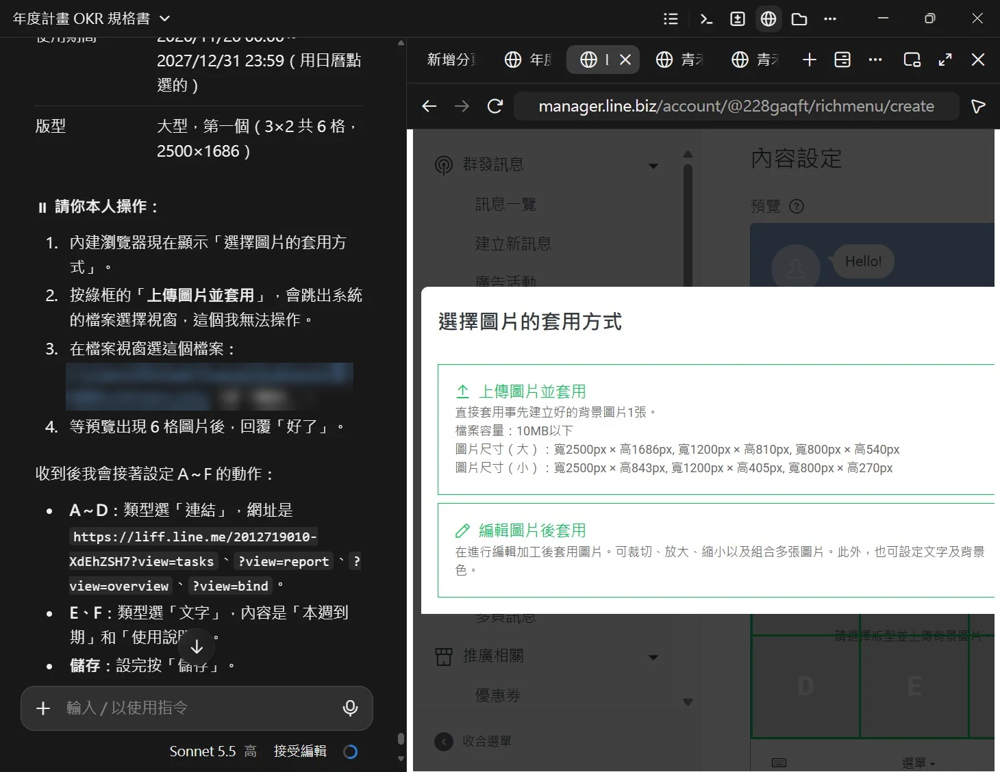
① 照 Claude 的說明操作 ② 按「上傳圖片並套用」
本人Claude 畫好選單圖、在官方帳號後台建立圖文選單；叫你上傳圖片時：按「上傳圖片並套用」，在檔案視窗選 Claude 給的路徑，回覆「好了」
應看到：預覽出現六格圖，Claude 設定 A～F 動作與使用期間並儲存
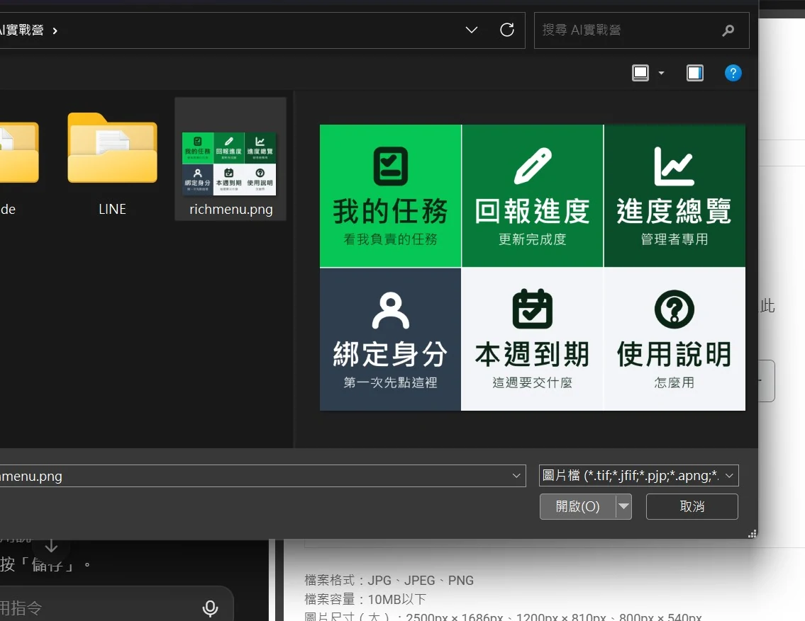
檔案視窗：① 選 richmenu.png ② 按「開啟」
本人Claude 畫好選單圖、在官方帳號後台建立圖文選單；叫你上傳圖片時：按「上傳圖片並套用」，在檔案視窗選 Claude 給的路徑，回覆「好了」
應看到：預覽出現六格圖，Claude 設定 A～F 動作與使用期間並儲存
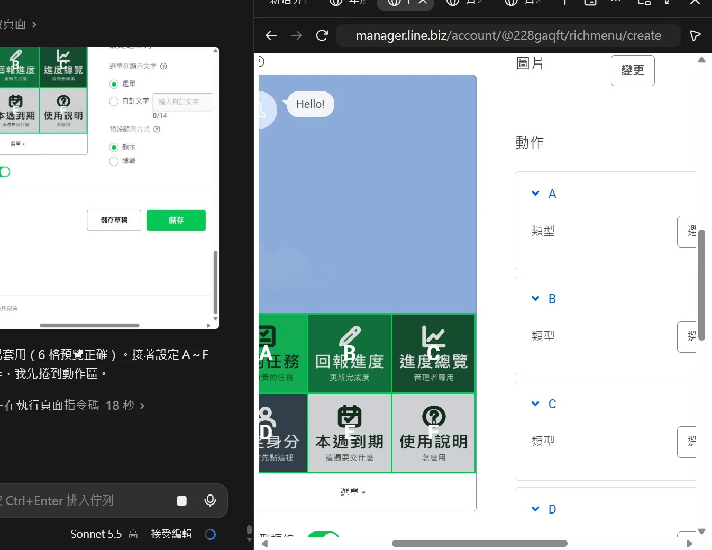
① 預覽出現六格圖 ② Claude 接著設定 A～F 每格的動作
本人Claude 畫好選單圖、在官方帳號後台建立圖文選單；叫你上傳圖片時：按「上傳圖片並套用」，在檔案視窗選 Claude 給的路徑，回覆「好了」
應看到：預覽出現六格圖，Claude 設定 A～F 動作與使用期間並儲存
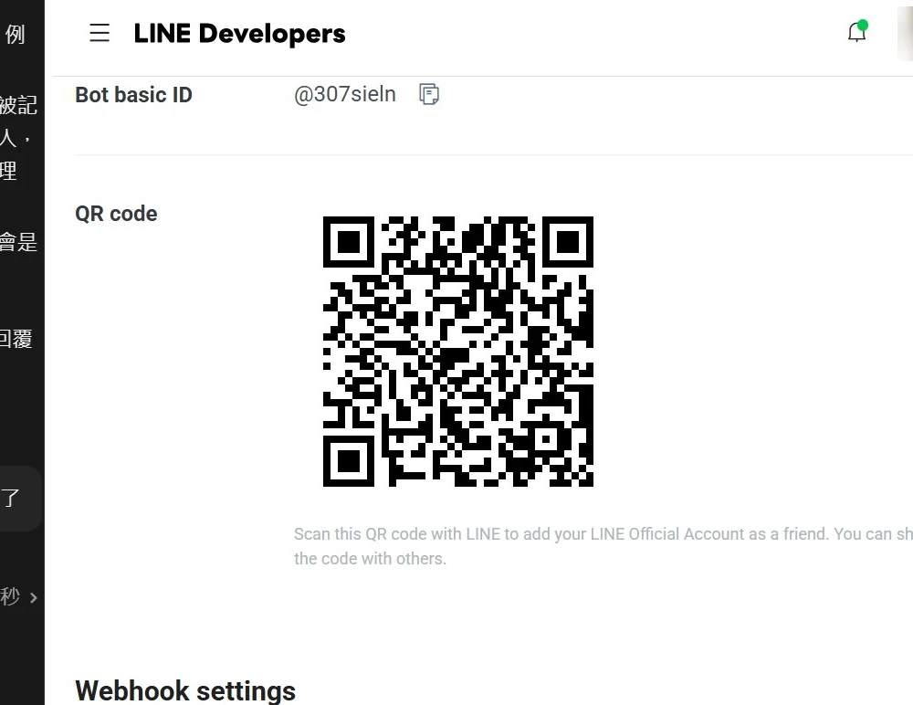
① 手機 LINE 掃 QR Code 加好友，再點選單「綁定身分」
本人手機掃 QR Code 加好友 → 聊天室下方點「綁定身分」→ 選你的名字（要選有負責任務的人）→ 確認綁定；Claude 問要不要執行 testReminder 時回覆「同意」
應看到：「已綁定：你的名字」；手機收到【測試提醒】

同意後執行一次 testReminder：手機收到提醒（畫面為 10/18 實測）
本人手機掃 QR Code 加好友 → 聊天室下方點「綁定身分」→ 選你的名字（要選有負責任務的人）→ 確認綁定；Claude 問要不要執行 testReminder 時回覆「同意」
應看到：「已綁定：你的名字」；手機收到【測試提醒】
此畫面沿用 2026-10-18 實測截圖
手機上會看到：選單、綁定、測試提醒
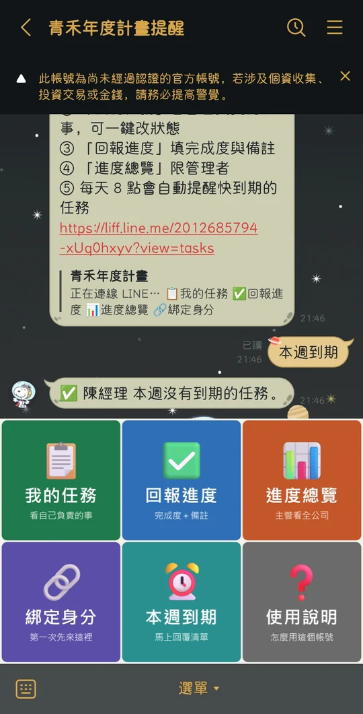
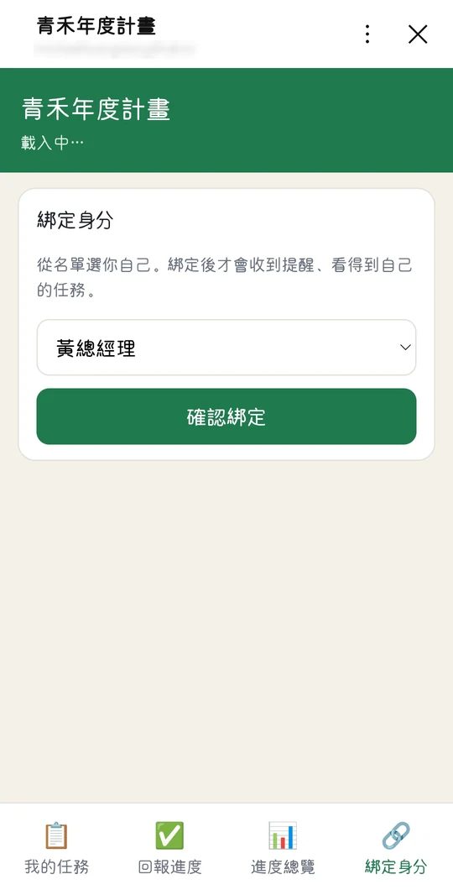
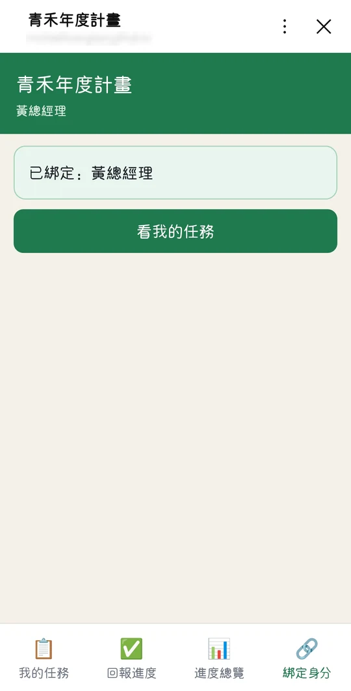
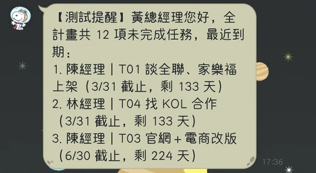
手機實拍：測試官方帳號（青禾食品範例，名單點選綁定版）。你的畫面依自己的規格書會不同。
AI 正在：寫程式、建試算表
技術解說
Claude Code：會讀寫檔案、執行指令、操作瀏覽器的 AI 代理。它的工作循環是「讀規格 → 列待辦 → 動手 → 檢查結果 → 修正」。
看這裡
看它的待辦清單怎麼一項一項打勾；看它寫進資料夾的 Code.gs 與執行紀錄.md。
討論
剛才的 AI 訪談，跟你們平常的年度規劃會議有什麼不同？哪一題最讓你卡住？
約 12 分鐘｜AI 進度跳到下一段就收束
Apps Script：寫在 Google 雲端的小程式
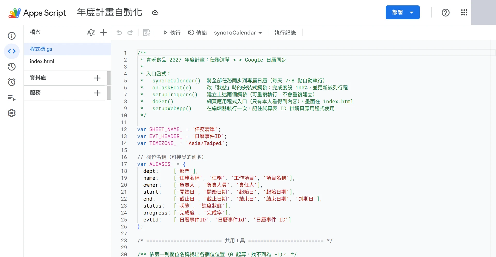
- AI 用 script.new 開一個新專案
- 你按 Ctrl+V 貼上 AI 寫好的 Code.gs
- 執行 setupSheet：程式自己建出試算表與所有分頁
範例畫面：原版青禾食品範例包（已遮蔽個資）。新版由 AI 依你的規格書產生，欄位與文字會不同。
AI 正在：Apps Script 建好試算表
技術解說
試算表＝資料；Apps Script＝寫在 Google 雲端的小程式（規則）；觸發條件＝鬧鐘。資料＋規則＋鬧鐘，就是會自己動的系統。
看這裡
看試算表一次長出所有分頁、下拉選單、FILTER 公式。
討論
你部門裡有哪一件事「靠人記得去做」？換成資料＋規則＋鬧鐘會長怎樣？
約 12 分鐘｜AI 進度跳到下一段就收束
LINE 官方帳號：公司在 LINE 的門市
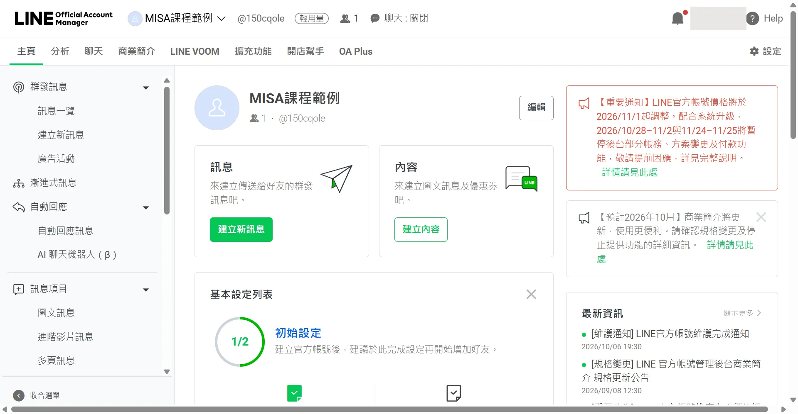
- 免費方案每月可主動推播 200 則
- 啟用 Messaging API，程式才能發訊息
- Webhook：有人傳訊息時，LINE 通知你的程式
範例畫面：原版青禾食品範例包（已遮蔽個資）。新版由 AI 依你的規格書產生，欄位與文字會不同。
token 放在「指令碼屬性」，不放在程式裡
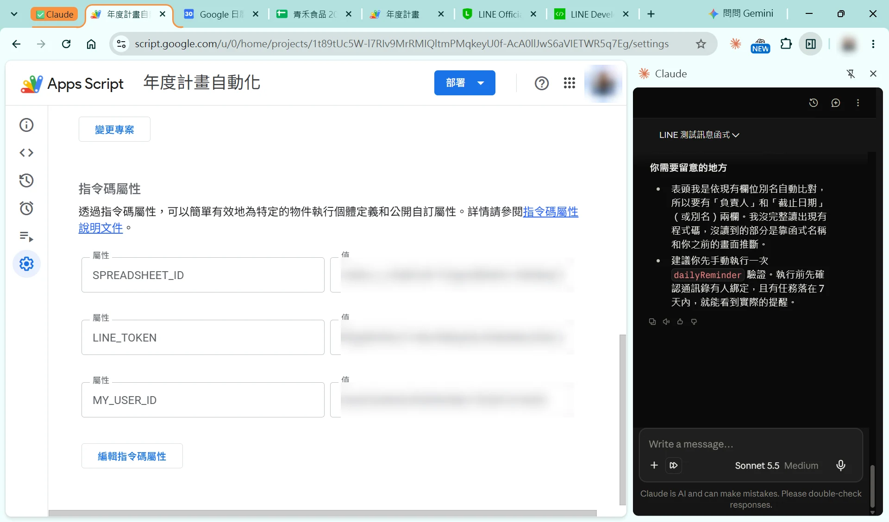
- token 是官方帳號的鑰匙：拿到就能用你的名義發訊息
- 只放指令碼屬性，不貼對話、不截圖
- 懷疑外洩就到 LINE Developers 按 Reissue
範例畫面：原版青禾食品範例包（已遮蔽個資）。新版由 AI 依你的規格書產生，欄位與文字會不同。
AI 正在：建立官方帳號、停下來等你授權
技術解說
官方帳號是公司在 LINE 的門市；Messaging API 是讓程式收發訊息的後門；token 是後門鑰匙。登入、條款、授權、金鑰一律本人做，這是責任與資安的設計。
看這裡
看 AI 在哪些畫面停下來叫你本人操作；token 只放在指令碼屬性。
討論
如果公司要讓 AI 代理做事，哪些事一定要人按最後一下？
約 12 分鐘｜AI 進度跳到下一段就收束
架構：畫面放 GitHub，資料留在試算表
LINE 選單
點「我的任務」
LIFF 網頁
放在 GitHub Pages
LINE 身分
ID token：知道是誰
Apps Script
請 LINE 官方確認身分
試算表
讀取、更新任務
畫面更新
同事看到結果
身分在後端驗證，別人假冒不了。
實測學到的：為什麼網頁不放 Apps Script
第一次實測
LIFF 網址指向 Apps Script：頁面打得開、後端也連得到，但 LINE 認不出是誰。原因是 Apps Script 會把網頁包在 Google 的框架裡。
第二次實測
網頁改放 GitHub Pages，Apps Script 只當後端：手機取得身分、後端驗證成功，六格選單全部正常。
所以執行 prompt 直接寫明架構，AI 不用再走一次冤枉路。
AI 正在：建立 LIFF、放上 GitHub Pages
技術解說
LIFF＝在 LINE 裡打開的網頁，知道「現在是誰在用」，不用另外登入；後端再請 LINE 官方確認身分，別人假冒不了。網頁放 GitHub Pages，因為實測發現 Apps Script 的網頁會被包在 Google 框架裡，LIFF 認不出來。
看這裡
看 LIFF 設定：Size、Scopes、Endpoint URL；repo 裡只有一個 index.html。
討論
如果同事不用下載 App、不用記帳密就能回報，你最想讓他們回報什麼？
約 12 分鐘｜AI 進度跳到下一段就收束
AI 正在：畫選單圖、設定圖文選單
技術解說
選單圖是 AI 用網頁排版畫好，再請電腦內建的瀏覽器拍成圖片；每一格要做什麼，是在官方帳號後台設定。
看這裡
看 richmenu.png 長什麼樣；後台 A～F 每格的動作。
討論
你的官方帳號如果給客戶用，選單 6 格會放什麼？
約 12 分鐘｜AI 進度跳到下一段就收束
每日提醒：觸發條件就是鬧鐘
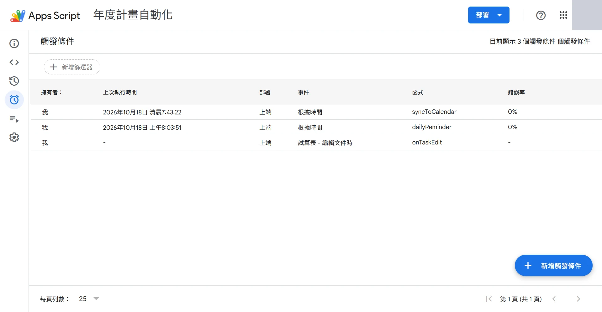
- 每天固定時間執行 dailyReminder
- 只提醒未完成、快到期或逾期的任務
- 想停掉：刪除這個觸發即可
範例畫面：原版青禾食品範例包（已遮蔽個資）。新版由 AI 依你的規格書產生，欄位與文字會不同。
AI 正在：手機綁定、測試提醒
技術解說
權限要寫在後端：只能改自己的任務、總覽限管理者。畫面藏起來不算安全，後端擋住才算。AI 也會出錯，好的 AI 會誠實回報、自己修正。
看這裡
看它遇到錯誤時怎麼判斷、怎麼修；看執行紀錄.md 留下了什麼。
討論
你會怎麼驗收新進同仁的工作？驗收 AI 要多看什麼？
約 10 分鐘｜AI 進度跳到下一段就收束
AI 不會「自動」得到你的授權
- 第一次執行會出現「Google 尚未驗證這個應用程式」
- 這是你自己的程式：進階 → 前往 → 允許
- 看清楚它要哪些權限，再按允許
- 陌生人給的程式，不要這樣授權
範例畫面：原版青禾食品範例包（已遮蔽個資）。新版由 AI 依你的規格書產生，欄位與文字會不同。
任務三｜卡關怎麼辦？（1／5）
先對照症狀；卡住 3 分鐘請助教判斷，不要重複貼同一段 prompt。
| 看到這個狀況 | 這樣處理 |
|---|---|
| Claude 停很久沒動 | 往上捲看看是不是在等你核准網站或指令，或出現「⏸ 請你本人操作」。 |
| Claude 做出本機 Excel 檔，沒有開瀏覽器 | 代表沒貼任務三的 prompt（訪談結束按了「確認」、只丟了規格書檔案或只回了數字，AI 就自己決定）。按停止，在同一個對話貼上整段任務三 prompt。 |
| Claude 想自己在編輯器打字或按 Ctrl+V | 按停止，回覆：「不要打字，把程式放進剪貼簿，叫我貼。」AI 逐字輸入會被編輯器自動補括號弄壞，AI 按的 Ctrl+V 也貼不上。 |
| 按了按鈕卻沒有開新分頁／新視窗 | 內建瀏覽器只允許你本人點出新視窗。授權視窗請你自己按；其他連結請 Claude 改用網址直接前往。 |
任務三｜卡關怎麼辦？（2／5）
先對照症狀；卡住 3 分鐘請助教判斷，不要重複貼同一段 prompt。
| 看到這個狀況 | 這樣處理 |
|---|---|
| 選函式時跑到 testReminder 或 dailyReminder | 不要按執行。先確認選單展開，再用方向鍵選；執行前確認名稱。不小心改到程式就按「復原」。 |
| Google 授權顯示「Google 尚未驗證這個應用程式」 | 正常。這是你自己的程式：「進階」→「前往（不安全）」→「允許」。 |
| LINE 要求驗證碼或同意條款 | 本人操作。不要把驗證碼打在對話裡，直接輸入在網頁上。 |
| LIFF 畫面空白，或卡在「正在連線 LINE」 | 多半是把網頁放在 Apps Script。LIFF 一定要放 GitHub Pages；請 Claude 檢查 Endpoint URL。 |
任務三｜卡關怎麼辦？（3／5）
先對照症狀；卡住 3 分鐘請助教判斷，不要重複貼同一段 prompt。
| 看到這個狀況 | 這樣處理 |
|---|---|
| 「我的任務」顯示取不到登入資訊 | LIFF 的 Scopes 少了 openid（AI 用程式勾選時可能沒存進去）。請 Claude 打開 LIFF 詳情，按 Scopes 的 Edit 用真實點擊勾 openid 再 Update，手機關掉畫面重開。 |
| 畫面顯示「身分驗證失敗」 | 請 Claude 檢查指令碼屬性 LOGIN_CHANNEL_ID，以及 LINE Login channel 和官方帳號是否在同一個服務提供者底下。 |
| 改了程式，手機看不到新功能 | Apps Script 要「管理部署作業 → 編輯 → 建立新版本」；GitHub 改完要 Commit 並等 1 分鐘、手機重開畫面。用了「新增部署作業」會換網址。 |
任務三｜卡關怎麼辦？（4／5）
先對照症狀；卡住 3 分鐘請助教判斷，不要重複貼同一段 prompt。
| 看到這個狀況 | 這樣處理 |
|---|---|
| Edge 轉圖沒有產生檔案 | 已開著的 Edge 會攔下指令。請 Claude 加上獨立的暫存使用者資料夾參數再轉一次。 |
| 圖文選單使用期間存不進去 | 日期欄位不能直接打字，要用日曆點選；開始日只顯示灰色提示字也算空的，要點一次；結束日往後翻到計畫年底。 |
| 手機看不到新選單 | 關掉聊天室重開；確認選單是「目前顯示的選單」、使用期間包含今天。 |
| 出現用量上限（usage limit） | 先停，改看講師示範與討論；額度恢復後開新對話貼「接續」prompt。 |
任務三｜卡關怎麼辦？（5／5）
先對照症狀；卡住 3 分鐘請助教判斷，不要重複貼同一段 prompt。
| 看到這個狀況 | 這樣處理 |
|---|---|
| 不小心把 token 貼進對話 | 到 LINE Developers 按「Reissue」重發 token，舊的立刻失效，再把新的貼到指令碼屬性。 |
AI 也會出錯，所以要看它的回報
2026/10/18 原版任務十三實測摘要
- AI 代理會出錯，就像新進同仁會出錯
- 好的 AI 會誠實回報做了什麼
- 你的工作：看回報、看紀錄、看結果
- 所以今天的 prompt 要求：卡兩次就停、先問再發 LINE
手機驗收：六格選單逐一點
- 貼上驗收 prompt，看通過／未通過表
- 手機依序點六格，對照試算表
- （選做）開放給同事、下載 Excel
任務四｜照這 6 步做（1／2）
灰字是做完應看到的畫面；對不上就先停，看「卡關怎麼辦」。完整 prompt 在講義。
- 貼上驗收 prompt從講義複製 prompt應看到：Claude 回報各項的通過／未通過與證據，加上手機測試清單
- 本人未通過的項目：看 Claude 的建議，同意才回覆「請修正第 N 項」應看到：修正後再次回報
- 本人手機點「我的任務」→ 對一項任務按「一鍵完成」應看到：那一項變成已完成；試算表的狀態與完成度同步更新
任務四｜照這 6 步做（2／2）
灰字是做完應看到的畫面；對不上就先停，看「卡關怎麼辦」。完整 prompt 在講義。
- 本人點「回報進度」→ 選一項、拉完成度、寫一句備註 → 送出應看到：「已回報」；試算表的完成度、最新備註、最後更新都有值
- 本人點「進度總覽」（管理者）、「本週到期」、「使用說明」應看到：總覽有各目標完成率與逾期清單；兩個文字按鈕由機器人立刻回覆
- 本人（選做）試算表「檔案」→「下載」→「Microsoft Excel (.xlsx)」，存一份帶走應看到：下載資料夾出現 .xlsx
任務四｜卡關怎麼辦？（1／2）
先對照症狀；卡住 3 分鐘請助教判斷，不要重複貼同一段 prompt。
| 看到這個狀況 | 這樣處理 |
|---|---|
| 「我的任務」是空的 | 綁定的名字可能沒有負責任務（例如只當確認人）。到「綁定身分」改選有任務的名字。 |
| 按「一鍵完成」沒反應 | 等 2～3 秒（Apps Script 回應較慢）；仍沒反應就關掉畫面重開。 |
| 進度總覽顯示「只開放給管理者」 | 管理者是第一位綁定的人。請 Claude 確認指令碼屬性 ADMIN_USER_ID 是誰，或在規格書調整權限。 |
| 本週到期沒有回覆 | 確認官方帳號回應設定的自動回應訊息是關閉、Webhook 開啟；並確認 Apps Script 已建立新版本。 |
任務四｜卡關怎麼辦？（2／2）
先對照症狀；卡住 3 分鐘請助教判斷，不要重複貼同一段 prompt。
| 看到這個狀況 | 這樣處理 |
|---|---|
| 同事打開畫面出現錯誤 | LINE Login channel 還在 Developing，只有管理員能用；貼「開放給同事」prompt 改成 Published。 |
手機驗收①：我的任務、回報進度
手機實拍：測試官方帳號（青禾食品範例，名單點選綁定版）。你的畫面依自己的規格書會不同。
回報後，試算表馬上跟著變
（實拍時另一次回報送的是 10%、沒寫備註，所以和左圖的數字不同）
手機與試算表實拍：測試官方帳號（青禾食品範例），2026/11/25。
手機驗收②：進度總覽、本週到期、使用說明
手機實拍：測試官方帳號（青禾食品範例，名單點選綁定版）。你的畫面依自己的規格書會不同。
驗收的三種證據
AI 的自我檢查
通過／未通過表格與證據。快，但不是最終答案。
你親手操作
手機按一鍵完成、回報進度，看試算表有沒有跟著變。
真實結果
手機真的收到提醒，六格選單都有反應。
同一套方法，還能用在哪裡？
都是「資料＋規則＋鬧鐘＋通知」：先訪談出規格，再讓 AI 動手
財務：應收帳款
逾期未收款自動 LINE 業務與財務
廠務：設備保養
保養日前 3 天通知負責人，完成後改狀態
法務：合約到期
到期前 30 天提醒法務與承辦人
人資：新人報到
報到前一週自動分派 IT、人資、主管的準備事項
業務：週目標
每週一推播本週目標與上週達成率
門市：巡店清單
未完成項目晚上 8 點自動提醒店長
開放給同事之前，再確認三件事
Published
LINE Login channel 還在 Developing 時只有管理員能用；改成 Published 同事才打得開。
當天就綁定
綁定是從名單點名字、沒有密碼。請同事當天加好友綁定，管理者到通訊錄核對每個名字是不是本人。
選單期間
圖文選單的使用期間要涵蓋整個計畫年度。
帶回公司前：AI 導入的安全清單
| 面向 | 要做的事 | 今天在哪裡看到 |
|---|---|---|
| 資料 | 給 AI 的資料先去敏，敏感內容用代號 | 任務一 訪談 |
| 帳號 | 關閉模型訓練；公司用企業方案統一管理 | 任務〇 隱私設定 |
| 代理 | 登入、條款、授權、金鑰、上傳一律本人做 | 任務三 ⏸ 本人操作 |
| 金鑰 | token 放指令碼屬性；外洩立刻 Reissue | 任務三 token |
| 公開 | GitHub repo 不放金鑰；API 先請 LINE 驗證身分 | 任務三 LIFF |
| 權限 | 只能改自己的任務、總覽限管理者，寫在後端 | 任務四 手機驗收 |
| 驗收 | 看 AI 回報＋本人實際操作＋真實結果 | 任務四 |
今天帶走的三件事
先訪談，再動手
讓 AI 問你問題，把腦中的脈絡變成規格書。
交辦要講五件事
成果、做法、何時找你、什麼不能做、怎麼回報。
你負責拍板與驗收
AI 動手；決定與責任留在你身上。
謝謝大家
MISA 高階主管 AI 實戰營｜3 小時濃縮版
講義、prompt 與範例包都可以帶回公司給同事照做